← Index · ← Previous · Next →
Authors: Meng Zeng, Shuai Yin, Roderich Moessner
Type: theory · Category: statistical mechanics · PDF: https://arxiv.org/pdf/2607.18028v1
Analysis basis: full PDF text, analyzed in chunks
Topic relevance: 🔥 non-equilibrium universality 4/5 · non-equilibrium dynamics 3/5 · analog quantum simulation 2/5 · Keldysh / 2PI / non-Gaussian methods 1/5 · driven-dissipative phase transition 1/5 · entanglement & information structure 1/5 · methods for driven-dissipative 1/5
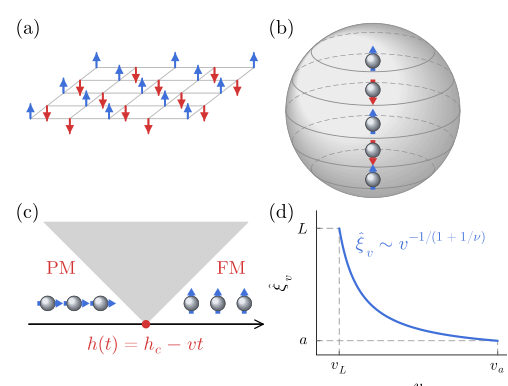
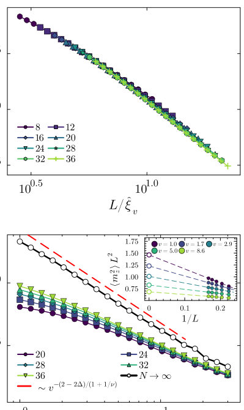
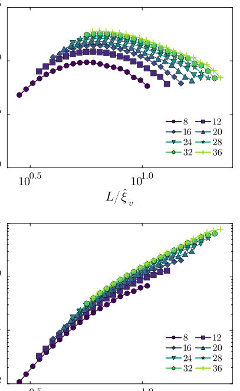
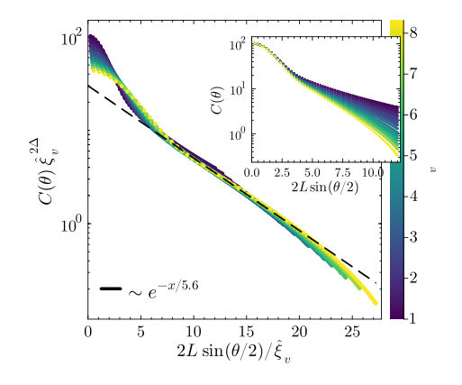
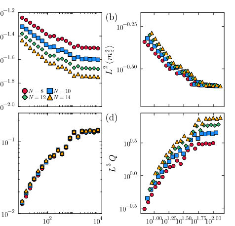
Summary. This work analyzes the real-time evolution of the 2D transverse-field Ising model on a fuzzy sphere as it passes through a quantum critical point. By simulating observables like magnetization and correlation functions during controlled quenches, the authors confirm predictions from Kibble-Zurek theory for certain quantities. Crucially, they demonstrate that this method provides a powerful tool to study non-equilibrium dynamics in strongly coupled Conformal Field Theories.
Why it may be interesting. The combination of non-equilibrium dynamics (quenches), critical phenomena scaling laws (KZ theory), and advanced mathematical frameworks like fuzzy geometry makes this highly relevant for understanding universal behavior in many-body quantum systems.
Main problem. The study investigates the real-time quantum dynamics of a system driven through a continuous phase transition, specifically testing Kibble-Zurek scaling and finite-time scaling in two dimensions.
Main result. The squared order parameter $\langle m_z^2 angle$ successfully follows conventional Kibble-Zurek predictions at intermediate quench rates, while the fuzzy sphere construction provides a route to studying real-time dynamics of strongly coupled CFTs.
Method. Numerical simulations using Time-Dependent Variational Principle (TDVP) on an effective Hamiltonian derived via fuzzy sphere regularization, supplemented by Exact Diagonalization for benchmarking.
Model / system. The paradigmatic two-dimensional transverse-field Ising model realized on the fuzzy sphere geometry. The system is quenched by linearly ramping the transverse field across its critical point.
Key observables. Squared order parameter $\langle m_z^2 angle$, excitation energy density $Q$, and the two-point correlation function $C( heta)$.
Important parameters / regimes. Quench rate ($v$), system size ($L$ or $N$), and the quench regimes (adiabatic, intermediate, fast).
Assumptions / limitations. The analysis relies on finite-size scaling arguments; a key limitation is that symmetry constraints cause the excitation energy density $Q$ to fail to reach predicted scaling regimes.
Figures summary. Figures illustrate data collapse for $\langle m_z^2 angle$ and $C( heta)$ confirming KZM, while also showing evidence of level sparsity in the energy spectrum due to symmetries.
Paper structure. The paper establishes the physical model (Ising on fuzzy sphere), details the quench protocol, analyzes three key observables ($\langle m_z^2 angle$, $Q$, $C( heta)$) across different quench rates, and concludes by generalizing the findings to other strongly coupled CFTs.
We revisit the problem of \textit{real-time} quantum dynamics of the paradigmatic two dimensional transverse-field Ising model using the recently developed fuzzy sphere regularization scheme. By linearly ramping the transverse field from the paramagnetic phase to criticality, we study the finite-time scaling behavior of the squared order parameter $\langle m_z^2 \rangle$, the excitation energy density $Q$, and the two-point correlation function of $m_z$. We establish numerically that, at intermediate quench rate, $\langle m_z^2 \rangle$ follows the conventional Kibble-Zurek prediction set by the critical exponents of the $3$D Ising universality class, and the correlation function exhibits the expected exponential decay whose correlation length can be used to estimate the non-universal scaling coefficient in the freeze-out time/length. In contrast, the excitation energy density $Q$ does not reach the same scaling regime at available system sizes due to large effective finite-size gap from symmetry-enforced level sparsity in the energy spectrum. At slow quench rates the universal quasi-adiabatic scaling for both $\langle m_z^2 \rangle$ and $Q$ is recovered. Since the fuzzy sphere construction can realize not only the Ising conformal field theory (CFT), but a broad family of $(2+1)d$ CFTs, our results establish a route to the real-time critical dynamics of strongly coupled CFTs that are otherwise computationally challenging to study.
Authors: Alex Steiner, Gerard Anglès Munné, Robert Freund, Ivan Pogorelov, Michael Meth, Robert J. Harris, Gavin Brennen, Thomas M. Stace, Thomas Monz, Rainer Blatt, Felix Huber, Martin Ringbauer
Type: experiment · Category: quantum information and computing · PDF: https://arxiv.org/pdf/2607.16503v1
Analysis basis: full PDF text, analyzed in chunks
Topic relevance: 🔥 QC/QI experiment 4/5 · entanglement & information structure 2/5 · quantum measurements 2/5 · analog quantum simulation 1/5 · correlated / nonlocal dissipation 1/5 · methods for driven-dissipative 1/5 · non-equilibrium dynamics 1/5
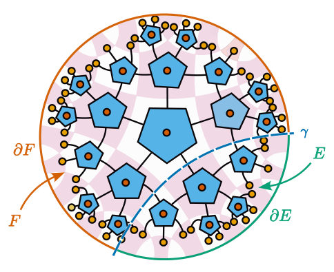
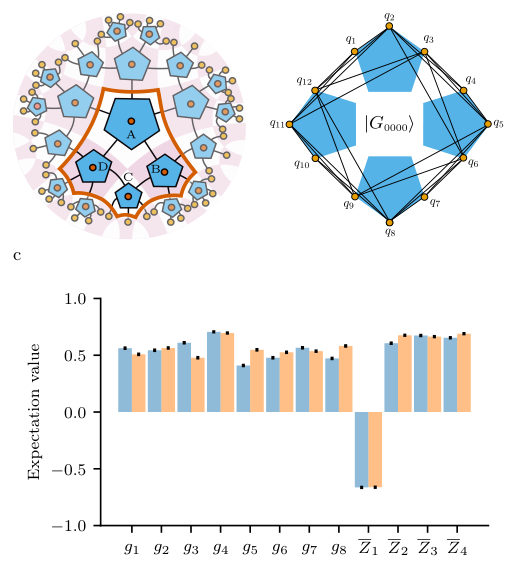
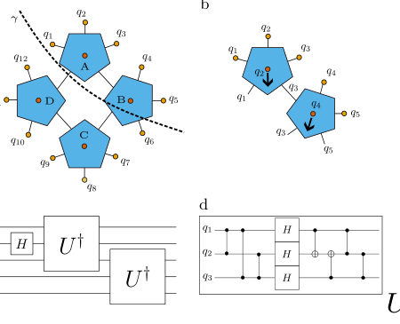
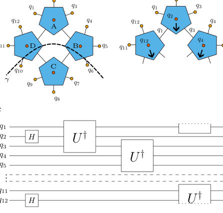
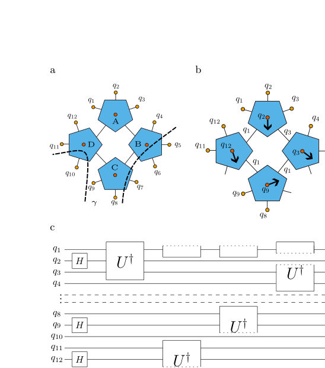
Summary. This paper experimentally implements holographic quantum codes, specifically the pentagon and heptagon codes, on a trapped-ion quantum processor. The research tests how encoding information based on geometric principles allows for partial recovery of quantum data from boundary measurements. This work advances the field by demonstrating a physical pathway toward using gravity-inspired concepts in fault-tolerant quantum computation.
Why it may be interesting. This work directly connects fundamental concepts from quantum gravity (holography) into a tangible platform for quantum information processing using trapped ions, providing an experimental testbed for advanced QEC theory.
Main problem. The research investigates the experimental realization and testing of holographic quantum error correcting codes to bridge concepts from gravity (holography) with practical quantum computation.
Main result. The authors successfully implemented holographic pentagon and heptagon codes using trapped ions, demonstrating partial recovery of logical information and performing basic logical gates.
Method. They utilized trapped ions for physical implementation, testing code properties like partial decoding (recovering bulk qubits from boundary measurements) and measuring fidelity against theoretical predictions.
Model / system. The system is a trapped-ion quantum processor using $^{40} ext{Ca}^+$ ions. The model involves encoding information into graph codes derived from holographic principles, specifically the pentagon and heptagon structures.
Key observables. Logical qubit fidelity (DFE), expectation values of stabilizer generators ($g_1$ to $g_{10}$), and successful recovery of logical bulk qubits from boundary measurements.
Important parameters / regimes. The code sizes tested include the pentagon code (4 logical qubits) and heptagon code. The physical platform uses Mølmer-Sørensen gates for entanglement.
Assumptions / limitations. The analysis relies on the theoretical framework of partial recovery, which differs from traditional full decoding requirements; experimental measurements are subject to quantum projection noise.
Figures summary. Figures illustrate the holographic structure (pentagon/heptagon), show the process of partial decoding via cuts $\gamma$, and compare measured expectation values of stabilizer generators against numerical simulations for gate operations.
Paper structure. The paper progresses from introducing the theoretical concept of holographic codes to detailing the experimental implementation on trapped ions, testing specific code structures (pentagon/heptagon), and finally demonstrating logical operations and error detection capabilities.
Holography is a central concept at the intersection of gravity, condensed matter theory, and quantum information, linking the interior bulk of a system to its boundary. A model realizing key features of holographic systems is the holographic pentagon code by Pastawski et al. Here we experimentally implement instances of the holographic pentagon and heptagon codes with trapped ions and test their properties: For the pentagon code, we recover logical bulk qubits from their nearby boundary and test the Ryu-Takayanagi entanglement area law. For the heptagon code, we show that the transversal Hadamard gate native to the constituent Steane codes induces a single-qubit, correctable error in the holographic code. Our implementation paves the way towards the use of holographic quantum codes for quantum information processing.
Authors: Fei Kong, Zhehua Huang, Zhengze Zhao, Pengju Zhao, Zhecheng Wang, Ya Wang, Fazhan Shi
Type: experiment · Category: other · PDF: https://arxiv.org/pdf/2607.16839v1
Analysis basis: full PDF text, analyzed in chunks
Topic relevance: 🔥 QC/QI experiment 4/5 · spintronics-quantum-optics interface 3/5 · quantum measurements 2/5 · exotic spin models in light-matter 1/5 · interference shaping light 1/5 · quantum optics experiment 1/5
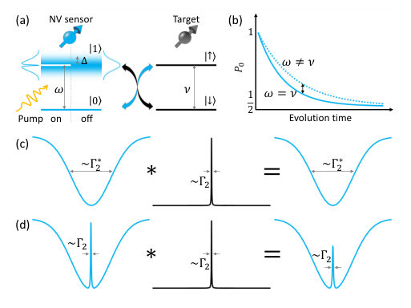
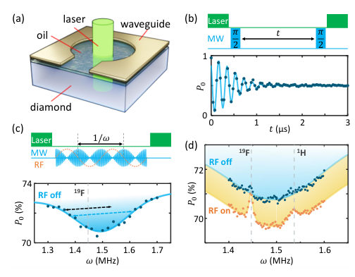
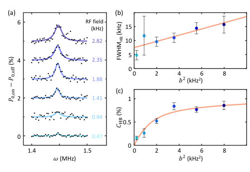
Summary. The paper introduces and experimentally validates a hole-burning technique to overcome inhomogeneous broadening in cross-relaxation spectra measured using NV centers in diamond. By selectively depleting specific sensor states, the method dramatically improves spectral resolution, enabling the clear spectroscopic identification of weakly coupled nuclear spins like $^{19} ext{F}$ and ${}^1 ext{H}$. This advancement enhances the utility of NV magnetometry for high-resolution studies in complex materials.
Why it may be interesting. This work provides a powerful spectroscopic tool for quantum sensors, directly addressing spectral limitations inherent in solid-state quantum platforms by adapting techniques from atomic physics (hole burning) to measure local magnetic environments with high fidelity.
Main problem. Inhomogeneous broadening significantly limits the spectral resolution of cross-relaxation spectra obtained using Nitrogen-Vacancy (NV) centers in diamond for magnetic noise detection.
Main result. A hole-burning technique successfully removes inhomogeneous broadening, allowing the clear resolution of distinct nuclear spin frequencies ($^{19} ext{F}$ and ${}^1 ext{H}$) that were previously unresolved.
Method. The authors adapted an optical hole-burning technique by applying a weak pump RF field during cross-relaxation measurements to selectively deplete specific NV centers, creating narrow spectral features.
Model / system. The system utilizes Nitrogen-Vacancy (NV) centers in diamond as quantum sensors for magnetic noise detection. The measurement relies on cross-relaxation spectroscopy between the NV center and target nuclear spins ($^{19} ext{F}$, ${}^1 ext{H}$).
Key observables. Cross-relaxation spectrum $S(\omega)$, hole-burning linewidth ($ ext{FWHM}_{ ext{HB}}$), and contrast of the burned holes.
Important parameters / regimes. Dephasing rate ($\Gamma^{*}_2$), coherence rate ($\Gamma_2$), weak pump field strength ($b_2$), and resonance frequencies (e.g., $1.446\ ext{MHz}$ for $^{19} ext{F}$).
Assumptions / limitations. The method retains the convenience of NV relaxometry while improving spectral resolution; approximations are used in deriving theoretical spectra.
Figures summary. Figure 2 compares initial cross-relaxation spectra (broad) with hole-burning spectra (narrow, resolving two distinct peaks for $^{19} ext{F}$ and ${}^1 ext{H}$). Figure 3 shows the dependence of the burned linewidth on pump strength ($b_2$).
Paper structure. The paper first establishes the limitation posed by inhomogeneous broadening in NV cross-relaxation. It then details the hole-burning methodology, demonstrating its application to resolve specific nuclear spin frequencies experimentally. Finally, it compares this technique's performance against other advanced sensing methods.
Quantum relaxometry based on nitrogen-vacancy (NV) centers in diamond is an easy-to-use technique that detects magnetic noise by measuring the longitudinal relaxation of NV centers. It is favored in chemical and biological applications due to the robustness against imperfect spin control. By tuning the energy level, NV relaxometry can detect magnetic noise generated by other spins and obtain magnetic resonance spectra through cross relaxation. However, the inhomogeneous broadening of NV centers greatly limits the spectral resolution of cross-relaxation spectra. Here we demonstrate a hole-burning technique to remove the inhomogeneous broadening. We utilize a weak pump field to deplete specific NV centers during the relaxation measurement, which contribute a reverse signal in the cross-relaxation spectra with a much narrower linewidth. Our method retains the convenience and sensitivity of NV relaxometry, opening up new avenues for high-resolution magnetic resonance spectroscopy in complex scenarios.
Authors: Chun-Yeol You
Type: theory · Category: numerical methods · PDF: https://arxiv.org/pdf/2607.17678v1
Analysis basis: full PDF text, analyzed in chunks
Topic relevance: 🔥 methods for driven-dissipative 4/5 · quantum measurements 3/5 · non-equilibrium dynamics 2/5 · correlated / nonlocal dissipation 1/5 · driven-dissipative phase transition 1/5 · measurement-induced transitions 1/5
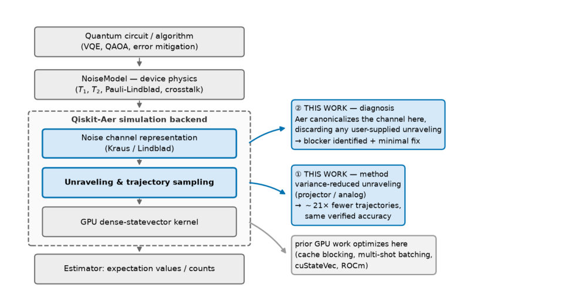
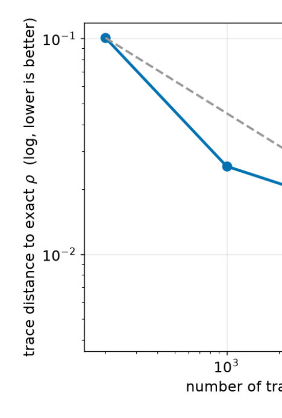
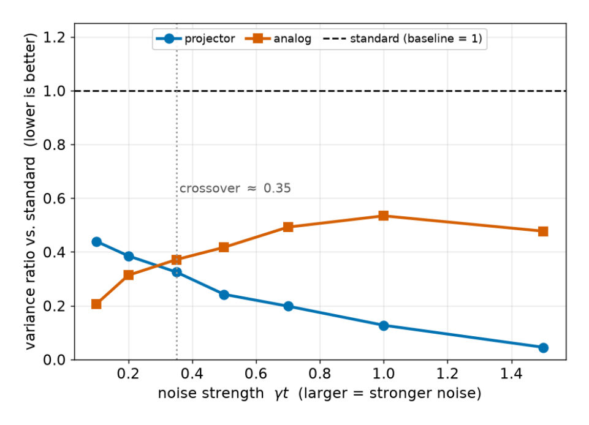
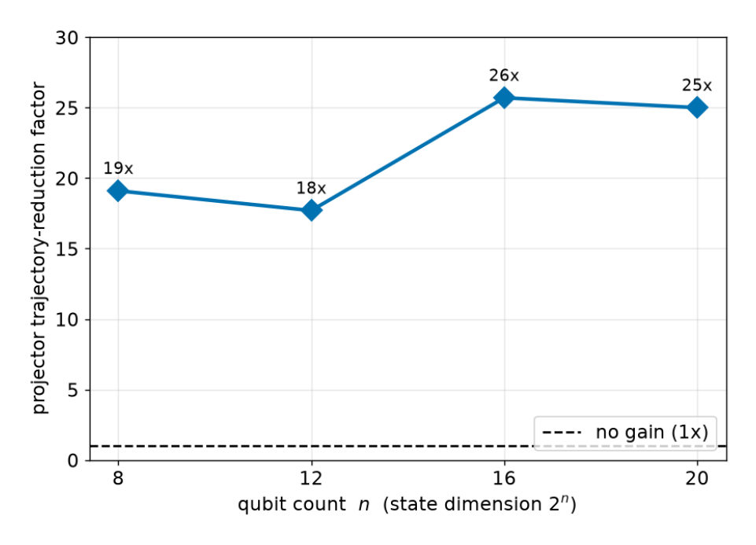
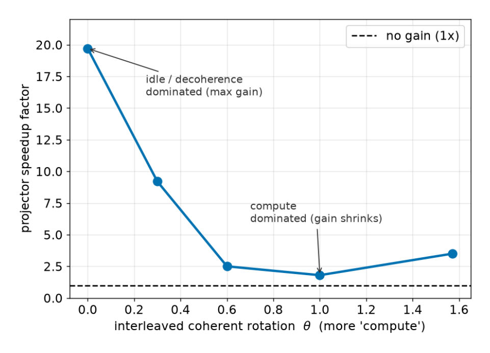
Summary. This paper introduces variance-reduced Monte Carlo trajectory unravelings—specifically projector and analog sampling—to overcome the massive computational cost of simulating noisy quantum circuits. By implementing these methods on a GPU engine, the authors demonstrate significant reductions (up to 26x) in the number of required simulation trajectories compared to existing tools like Qiskit-Aer. The work also identifies a critical software gap preventing immediate adoption within current production APIs.
Why it may be interesting. This work directly addresses the statistical bottleneck in simulating open quantum systems, providing a concrete algorithmic improvement (variance reduction) that is crucial for applying noisy circuit simulations to complex problems like VQE or error mitigation.
Main problem. The primary challenge is efficiently simulating noisy quantum circuits, as exact density-matrix methods are memory-prohibitive for large systems.
Main result. Variance-reduced unravelings (projector and analog sampling) significantly reduce the required number of Monte Carlo trajectories needed to achieve a target standard error by factors up to 26x compared to standard GPU simulation tools.
Method. The authors implement and compare projector and analog sampling techniques, which are variance reduction methods applied to quantum-jump (Monte-Carlo trajectory) simulations running on a GPU dense-statevector engine.
Model / system. The work models open-system dynamics using Lindblad generators for noisy quantum circuits. Simulations use the GPU dense-statevector representation ($\psi \in \mathbb{C}^{2^n}$) and are validated against the exact density matrix evolution.
Key observables. Standard error of expectation values, required number of trajectories ($N$), fidelity (compared to ideal circuit), and variance ratios between unraveling methods.
Important parameters / regimes. Circuit size ($n=8$ to $20$), noise strength ($\gamma t \approx 0.35$ crossover point), and the target standard error ($\le 10^{-2}$).
Assumptions / limitations. The primary limitation is that Qiskit-Aer's public API canonicalizes the noise channel, preventing the direct use of these advanced variance-reduced unravelings.
Figures summary. Figures illustrate the performance gains (trajectory savings) and present a regime map showing where analog sampling or projector unraveling is optimal based on noise strength.
Paper structure. The paper establishes the problem (memory limits), introduces variance reduction techniques, details the GPU implementation and validation against exact methods, presents quantitative results comparing trajectory counts across different noise regimes, and concludes by identifying the necessary API modification for production use.
Monte-Carlo trajectory (quantum-jump) methods are the practical route to simulating noisy quantum circuits once the exact density-matrix method is precluded by its $4^n$ memory cost. Their bottleneck is estimator variance: resolving one expectation value can demand thousands of trajectories. Recent tensor-network work shows that \emph{variance-reduced unravelings} -- projector and analog sampling -- sharply cut this variance, but only on CPU matrix-product-state backends, with no path into production tooling. We implement both unravelings on a \emph{GPU dense-statevector} trajectory engine and validate them against the exact density matrix (ideal-circuit fidelity $1-2.2\times10^{-16}$; $1/\sqrt{N}$ convergence; all unravelings unbiased to trace distance $<0.01$). On a single consumer GPU, projector unraveling reaches a target standard error with $20.8\times$ fewer trajectories than Qiskit-Aer's \texttt{batched_shots_gpu} at $n=10$, a factor that holds at $19$--$26\times$ across $n=8$--$20$. A regime map places analog sampling optimal at weak noise and projector at strong noise, crossing near $γt\approx0.35$. We further report a systems finding: Qiskit-Aer applies noise at the \emph{channel} level and reconstructs a canonical Kraus decomposition at apply time, discarding any user-supplied unraveling, so variance-reduced unravelings cannot be delivered through its public API. Because Aer's Born-rule collapse machinery already exists, we specify a minimal change that would unlock the technique in production.
Authors: J M Luck, P L Krapivsky
Type: theory · Category: statistical mechanics · PDF: https://arxiv.org/pdf/2607.18007v1
Analysis basis: full PDF text, analyzed in chunks
Topic relevance: 🔥 non-equilibrium dynamics 4/5 · non-equilibrium universality 3/5 · analog quantum simulation 2/5 · Keldysh / 2PI / non-Gaussian methods 1/5 · methods for driven-dissipative 1/5
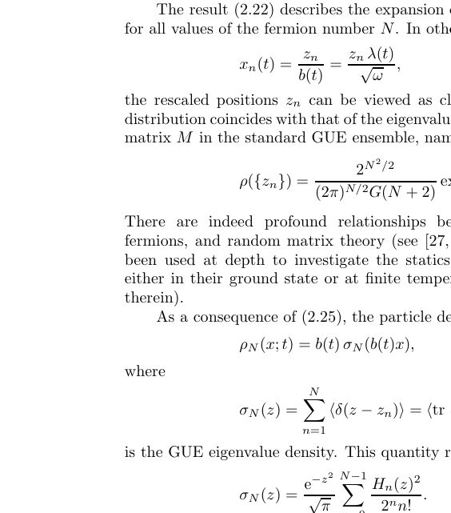
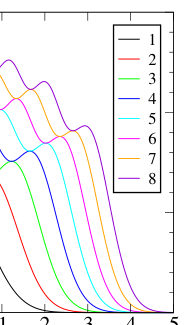
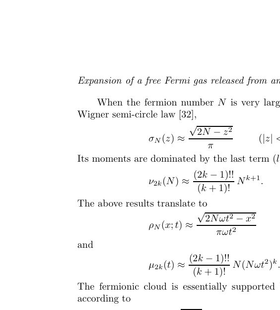
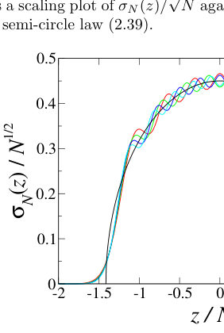
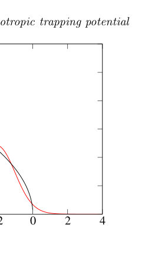
Summary. This paper theoretically analyzes the expansion of a free Fermi gas released from an isotropic trap. Using semi-classical methods, it derives universal power-law scaling laws for the density profile in arbitrary dimensions and for potentials with any exponent. The results generalize fundamental distributions like the Wigner semi-circle law to non-equilibrium dynamics.
Why it may be interesting. This work provides a rigorous theoretical framework for understanding non-equilibrium dynamics in quantum many-body systems, particularly how initial confinement dictates long-time ballistic spreading, which is crucial for modeling trapped atomic gases or quantum fluids.
Main problem. The study investigates the time evolution and late-time spatial profile of a free Fermi gas after its confining isotropic potential is suddenly removed.
Main result. The paper derives explicit, universal power-law scaling for the density profile $ ho_N(r; t)$ in arbitrary dimensions $d$ and for potentials with general exponents $a$, generalizing known results like the Wigner semi-circle law.
Method. Semi-classical techniques are employed to analyze the large-$N$ limit, treating the dynamics via expectation values derived from the initial many-body ground state wavefunction.
Model / system. The system is a non-interacting Fermi gas confined by an isotropic trapping potential $V(x)$ in any dimension. The analysis covers both the exactly solvable harmonic case and general power-law potentials $V(x) \sim |x|^a$.
Key observables. Total fermion density $ ho_N(r; t)$, momentum distribution, and moments $\mu_{2k}(t)$ of the expanding cloud.
Important parameters / regimes. Fermion number ($N$), dimensionality ($d$), potential exponent ($a$), and time ($t$).
Assumptions / limitations. The analysis relies on the semi-classical limit for large fermion numbers ($N \gg 1$) and assumes sudden release of the trapping potential.
Figures summary. Figures illustrate scaling functions $A(\xi)$ (harmonic trap) and $F(\xi)$ (square-well potential), showing how the density profile evolves away from initial equilibrium distributions.
Paper structure. The paper progresses by first establishing the general formalism for calculating time-dependent expectation values, solving the exactly solvable harmonic case using GUE statistics, and finally generalizing the results to arbitrary power-law potentials in the semi-classical limit.
We consider a system of non-interacting fermions prepared in the many-body ground state of an isotropic trapping potential in any dimension, and investigate the ballistic expansion of the fermionic cloud after the potential is suddenly released. Using semi-classical techniques, we derive the full late-time profile of the expanding cloud in the regime when the fermion number is large. We thus obtain explicit expressions for power-law potentials with arbitrary exponent $a$ and in all dimensions $d$. The momentum distribution and the spatial profile of the cloud exhibit a universal edge exponent $d/a$, thus generalizing the Wigner semi-circle law and the Thomas-Fermi distribution.
Authors: Siwei Li, Xiaofen Huang
Type: theory · Category: quantum information and computing · PDF: https://arxiv.org/pdf/2607.16641v1
Analysis basis: full PDF text, analyzed in chunks
Topic relevance: 🔥 entanglement & information structure 4/5 · correlated / nonlocal dissipation 2/5 · non-equilibrium dynamics 2/5 · Keldysh / 2PI / non-Gaussian methods 1/5 · driven-dissipative phase transition 1/5 · methods for driven-dissipative 1/5
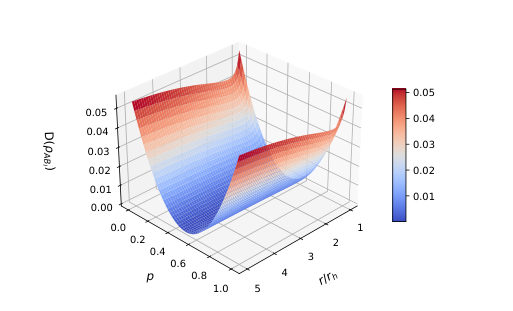
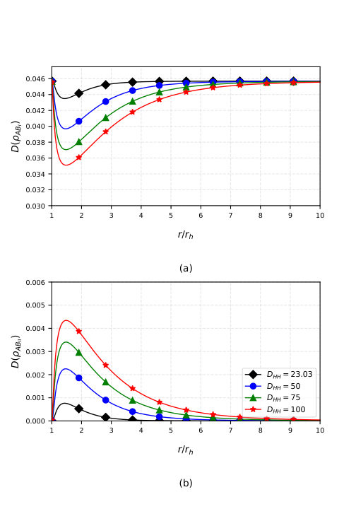
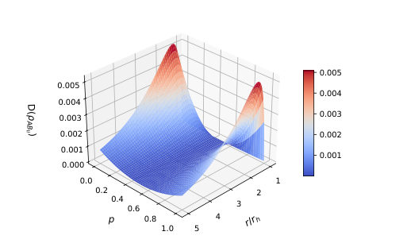
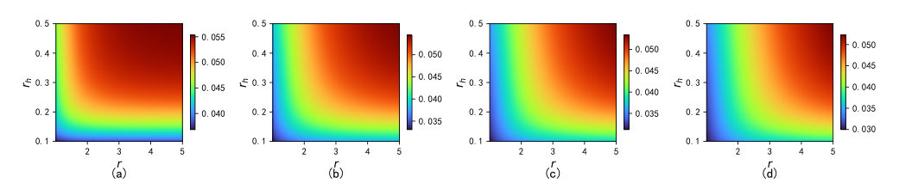
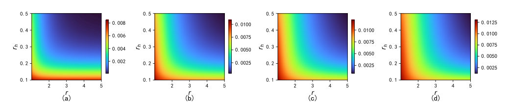
Summary. This paper analyzes the geometric quantum discord of bipartite Werner states influenced by Hawking radiation near a black hole. It finds that the quantum correlation exhibits distinct, opposing nonmonotonic behaviors in regions accessible and inaccessible to observers. The results highlight that these correlations are strongly modulated by both the black hole's geometry and the associated thermal effects.
Why it may be interesting. This work connects fundamental concepts from general relativity (Hawking radiation) with quantum information theory (quantum discord), providing insights into how spacetime curvature affects entanglement measures.
Main problem. The study investigates how Hawking radiation affects the geometric quantum discord of bipartite Werner states within the quantum atmosphere surrounding a Schwarzschild black hole.
Main result. The geometric quantum discord exhibits nonmonotonic behavior, decreasing then increasing in the physically accessible region and showing the opposite trend in the inaccessible region. Extremal values occur near the peak intensity of Hawking radiation.
Method. The analysis involves calculating the geometric quantum discord for reduced density matrices derived from an initial Werner state subjected to Hawking radiation effects using Bogoliubov transformations.
Model / system. The system models a bipartite quantum state (Werner states) near a Schwarzschild black hole, considering both physically accessible and inaccessible regions due to Hawking radiation.
Key observables. Geometric quantum discord, $D( ho)$, for subsystems like $ ho_{ABI}$ and $ ho_{ABII}$.
Important parameters / regimes. Normalized radial distance ($r/r_h$), Hartle–Hawking constant ($D_{HH}$), and event horizon radius ($r_h$).
Assumptions / limitations. The analysis assumes the use of natural units and models the evolution using specific reduced density matrices derived from Hawking field theory.
Figures summary. Figures illustrate the opposing trends of quantum discord in accessible vs. inaccessible regions as a function of normalized distance, highlighting extrema near the peak Hawking radiation intensity.
Paper structure. The paper progresses by defining the physical system and observables (Werner states, geometric discord), deriving the reduced density matrices under Hawking effects, analyzing the dependence on radial distance, and finally discussing the roles of $D_{HH}$ and $r_h$.
We investigate the geometric quantum discord of bipartite Werner states influenced by Hawking radiation in the quantum atmosphere of a Schwarzschild black hole. We find that the geometric quantum discord in the physically accessible region exhibits a nonmonotonic behavior: it first decreases and then increases as the normalized radial distance increases, while the discord in the physically inaccessible region shows the exact opposite trend. A pronounced extremum of geometric quantum discord occurs precisely at the position corresponding to the peak intensity of Hawking radiation. Furthermore, we find that the Hartle Hawking constant and the event horizon radius exert opposite effects on the strength of quantum correlation redistribution: a larger Hartle Hawking constant enhances the redistribution effect, whereas a larger event horizon radius suppresses it.
Authors: Ziqiu Huang, Angus Cowley-Semple, Irena Nevjestic, Yifan Yu, Mark Oxborrow, Sam L. Bayliss, Sarah K. Mann, Max Attwood
Type: experiment · Category: other · PDF: https://arxiv.org/pdf/2607.16466v1
Analysis basis: full PDF text, analyzed in chunks
Topic relevance: 🔥 spintronics-quantum-optics interface 4/5 · exotic spin models in light-matter 3/5 · QC/QI experiment 1/5 · correlated / nonlocal dissipation 1/5 · driven-dissipative phase transition 1/5 · methods for driven-dissipative 1/5
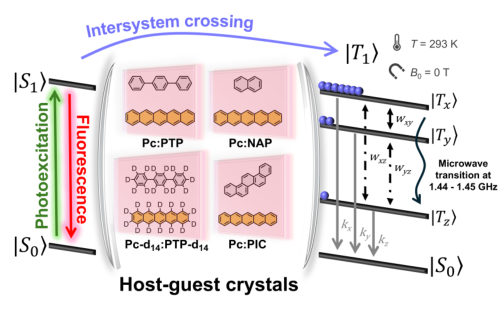
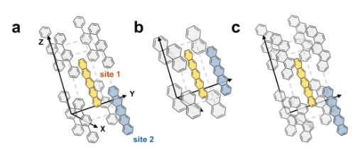
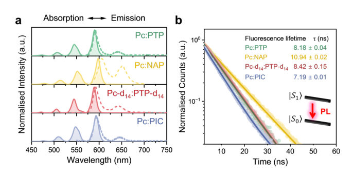
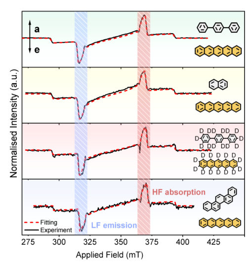
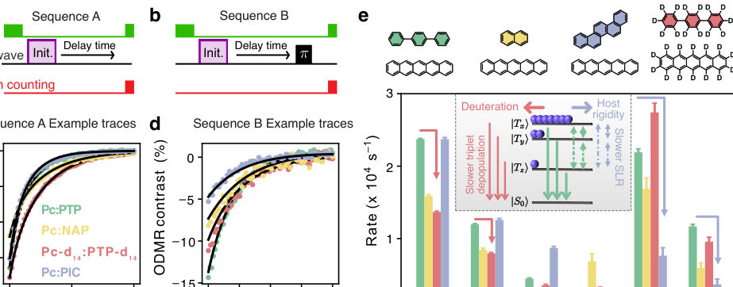
Summary. The research demonstrates how molecular host-guest crystal engineering can precisely tailor room-temperature electron spin dynamics in pentacene-based quantum devices. By systematically comparing different hosts, the authors identify perdeuterated p-terphenyl as the optimal material for achieving low-loss, continuous wave maser operation. This work establishes a powerful design principle for molecular quantum technologies.
Why it may be interesting. This work directly addresses the challenge of realizing solid-state quantum emitters at ambient conditions by showing that crystal engineering offers precise control over spin Hamiltonian parameters (like zero-field splitting and hyperfine coupling) through host modification.
Main problem. The central goal is developing molecular materials capable of coherent control over electron spin states at room temperature for use in quantum technologies like masers.
Main result. Host-guest engineering, particularly using perdeuterated pentacene in perdeuterated p-terphenyl (Pc-d14:PTP-d14), proves to be a highly effective and practical method for tuning spin dynamics toward building continuous wave masers.
Method. The study employs advanced spectroscopic techniques including Electron Paramagnetic Resonance (EPR) and Optically Detected Magnetic Resonance (ODMR) at room temperature to probe spin relaxation, triplet population, and coherence times.
Model / system. The physical system consists of pentacene molecules acting as spin-active guests embedded within various crystalline host matrices (e.g., PTP, NAP, PIC). The dynamics are analyzed using coupled rate equations describing singlet and triplet sublevel populations.
Key observables. Spin-lattice relaxation rates ($\omega_{ij}$), triplet population ratios ($P_x:P_y:P_z$), Rabi oscillation damping rates ($\Gamma$), fluorescence lifetimes ($ au_f$), and maser cooperativity ($\eta_{maser}$).
Important parameters / regimes. Room temperature operation, high guest concentrations ($\sim 10^{24} ext{ m}^{-3}$), and the influence of host lattice rigidity and vibrational coupling.
Assumptions / limitations. The analysis relies on fitting time-domain signals to Bessel functions for Rabi oscillations and solving coupled rate equations for population dynamics; some rates are estimated based on literature or assumed equal across systems.
Figures summary. Figures illustrate photophysical processes, crystal structures, fitted Rabi oscillation curves showing field dependence, zero-field ODMR linewidths, and the setup/results for maser operation.
Paper structure. The paper progresses from establishing the need for room-temperature spin control to characterizing various host-guest systems using optical and magnetic resonance techniques. It details how structural changes modulate ISC efficiency and relaxation pathways, culminating in a quantitative assessment of suitability for maser applications.
Molecular materials that enable coherent control over an electron's spin state at room temperature are promising candidates for quantum technologies, including quantum sensors and ultra-low noise microwave amplifiers, known as masers. Host-guest molecular crystals enable independent control of spin-active guests and their local environments to enhance molecular spin properties and so improve device performance. Using electron paramagnetic resonance and optically-detected magnetic resonance, we demonstrate the ability to tune triplet population, depopulation, and spin-lattice relaxation by modulating host-dependent lattice rigidity and vibrational coupling to significantly reduce the operating requirements for building useful masers. Importantly, the most rigid host, picene, reveals the ability to slow spin-lattice relaxation without lengthening triplet lifetime, though at the cost of strain-induced line width broadening and reduced triplet spin polarisation. We also find that deuteration reduces the triplet resonance line width and vibrationally-mediated triplet depopulation. Consequently, we find that perdeuterated pentacene in perdeuterated p-terphenyl is the most viable candidate for building a continuous wave maser. This work demonstrates host-guest engineering as an important and practical method for tuning the spin-dependent performance of room-temperature molecular quantum technologies.
Authors: Simon Neves, Fériel Armbruster, Jean-Pierre Wolf
Type: experiment · Category: other · PDF: https://arxiv.org/pdf/2607.16419v1
Analysis basis: full PDF text, analyzed in chunks
Topic relevance: 🔥 quantum optics experiment 4/5 · interference shaping light 3/5 · quantum measurements 2/5 · driven-dissipative phase transition 1/5 · methods for driven-dissipative 1/5
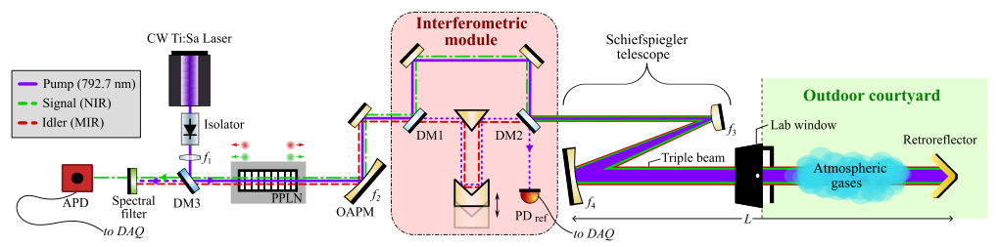
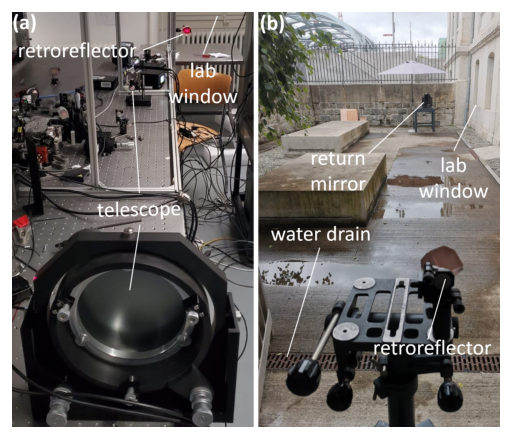
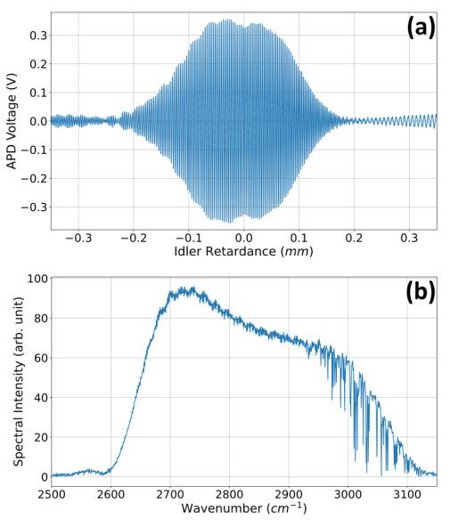
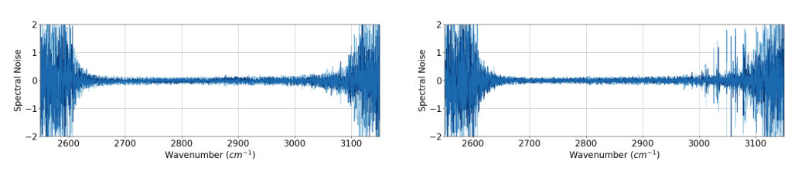
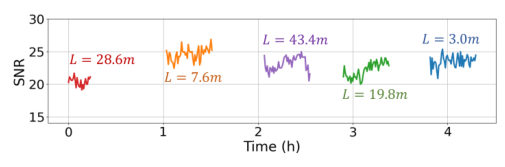
Summary. The paper presents a breakthrough technique for remote infrared gas sensing using quantum light sources (biphotons) in an open-path geometry. By detecting only near-infrared photons while probing mid-infrared absorption features, the method bypasses limitations of traditional IR detectors. This allows for long-distance, field-deployable measurements of atmospheric gases like methane and butane.
Why it may be interesting. This work represents a significant application of quantum optics to fundamental sensing problems. The ability to perform remote spectroscopy without complex mid-IR detectors is highly relevant for developing field-deployable quantum sensors, bridging quantum physics with atmospheric science and metrology.
Main problem. To develop a novel, remote method for Fourier-transform infrared (FTIR) spectroscopy capable of measuring gas concentrations in the open atmosphere by utilizing quantum light sources.
Main result. The authors successfully demonstrated this technique over distances up to 43.4 m, achieving the first measurement of atmospheric methane and butane using undetected photons.
Method. The method relies on a nonlinear interferometric setup driven by Spontaneous Parametric Down-Conversion (SPDC) to generate correlated photon pairs, allowing the mid-infrared spectrum to be reconstructed solely by detecting near-infrared signal photons.
Model / system. The system uses a quantum nonlinear interferometer interrogated by a triple beam (pump, signal, idler) sent over an open path. The core principle involves measuring the signal photon flux as a function of tunable idler retardance to reconstruct the absorption spectrum via Fourier transform.
Key observables. Signal photon flux $P_s(x)$, reconstructed spectral intensity $I( u)$, and calculated absorbance $A( u)$ for specific gases like $ ext{CH}_4$ and n-butane.
Important parameters / regimes. Open path length ($L$) up to 43.4 m; low gain regime ($n \ll 1$); spectral resolution limited by the window function (e.g., $0.53 ext{ cm}^{-1}$).
Assumptions / limitations. The analysis assumes a monochromatic pump laser and that the ambient air is relatively non-dispersive for initial simplifications; saturation of water vapor remains a major limitation.
Figures summary. Figures show stable nonlinear interferometers over long paths, measured signal-photon interferograms corresponding to reconstructed spectra (e.g., methane/water vapor), and comparisons of calculated absorbance against HITRAN data.
Paper structure. The paper details the quantum physical setup using SPDC in PPLN, describes the measurement process involving an open-path nonlinear interferometer, derives the relationship between signal flux and spectral absorbance, and validates the technique by measuring known gases ($ ext{CH}_4$, n-butane) over long outdoor paths.
We demonstrate a novel method for remote open-path Fourier-transform infrared spectroscopy with undetected photons. Similar to previous quantum spectroscopy works, a mid-infrared spectrum is reconstructed by detecting a near-infrared radiation only, thus bypassing important limitations of infrared detectors. Our study however relies on the co-propagation of the photon-pair and the pump-laser over the same optical path, which allows the probing of the open atmosphere over long distances. By sending the photons over unprecedented distances of up-to 43.4m in the outdoor atmosphere, we were able to detect butane released in the open-path, as well as natural atmospheric methane, thus demonstrating the first use of infrared spectroscopy with undetected photons for atmospheric measurements.
Authors: Mihir Chaudhari, Ian Christen, Xinyi Ren, Chun-Ho Lee, Tushar Sanjay Karnik, Reshma Kopparapu, Clayton Cheung, Kai-Chi Chang, Mengjie Yu
Type: experiment · Category: quantum information and computing · PDF: https://arxiv.org/pdf/2607.16575v1
Analysis basis: full PDF text, analyzed in chunks
Topic relevance: 🔥 quantum optics experiment 4/5 · correlated cavity matter 3/5 · QC/QI experiment 1/5 · driven-dissipative phase transition 1/5 · interference shaping light 1/5
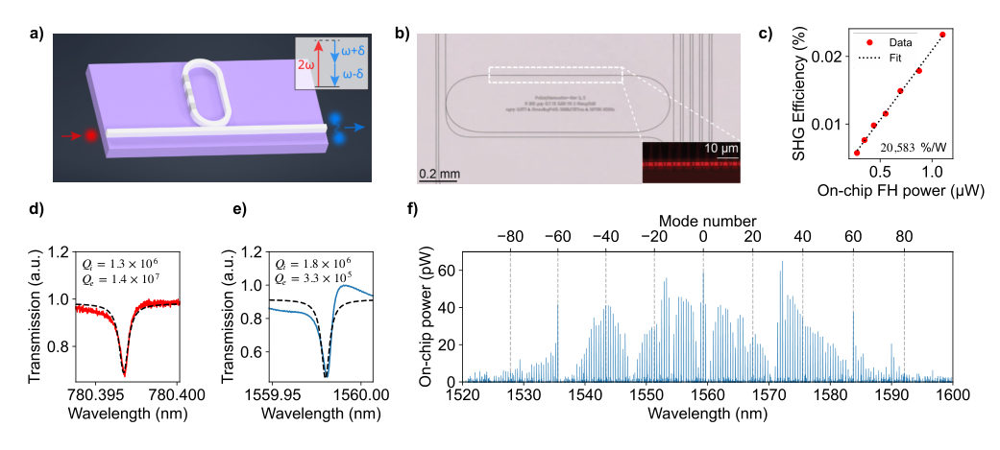
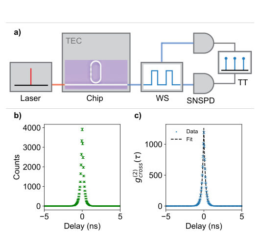
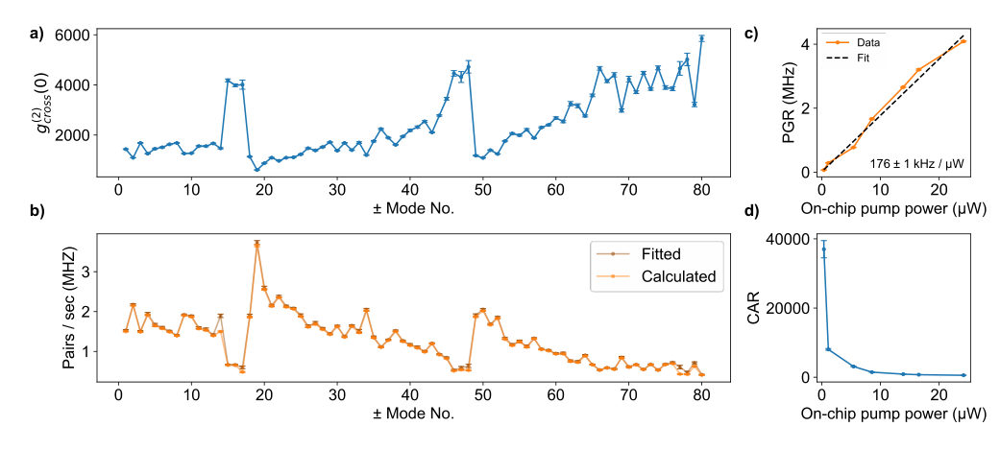
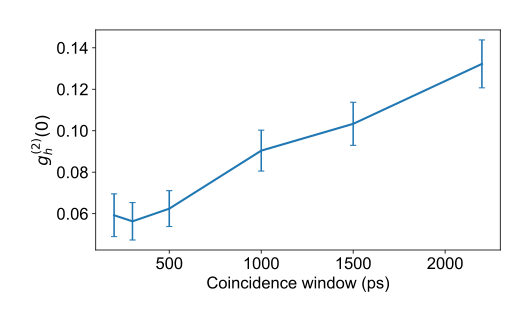
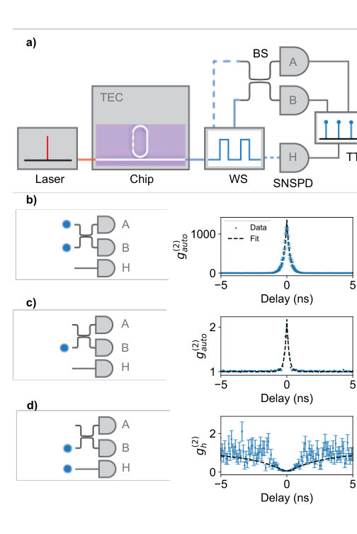
Summary. The research presents an 80-channel correlated photon pair source built into an X-cut TFLN microresonator, setting a record for channel count. By leveraging the strong nonlinearity of TFLN, the system achieves high generation rates and confirms single-photon antibunching. This work establishes TFLN as a highly promising platform for integrating complex quantum light sources.
Why it may be interesting. This work directly addresses the hardware requirements for scalable quantum technologies by demonstrating high-density wavelength multiplexing of entangled sources on a highly integrable platform (TFLN).
Main problem. The primary goal is developing a high-channel count, robust source of correlated photon pairs necessary for scaling quantum applications like QKD or quantum networking.
Main result. The authors demonstrated an unprecedented 80-channel photon pair source using X-cut TFLN, achieving heralded single-photon operation and confirming its potential for integrated quantum optics.
Method. The experiment involves pumping a periodically-poled thin-film lithium niobate racetrack microresonator with visible light to generate correlated photon pairs via SPDC/SFWM, followed by detailed characterization using cross-correlation and auto-correlation measurements.
Model / system. The physical system is an X-cut TFLN racetrack microresonator. Photon pair generation relies on the strong second-order nonlinearity ($\chi^{(2)}$) of TFLN within a resonant cavity, which enhances interaction and filters photons spectrally.
Key observables. Second-order correlation function ($g^{(2)}( au)$), Pair Generation Rate (PGR), Coincidence-to-Accidental Ratio (CAR), and heralded auto-correlation dip ($g^{(2)}_h(0)$).
Important parameters / regimes. 80 measured photon pair channels spanning the C and L bands with 49.5 GHz spacing; $125.7 ext{ kHz}/\mu ext{W}$ pair generation rate.
Assumptions / limitations. The source is engineered to be overcoupled ($Q_e < Q_i$) to maximize escape efficiency ($\eta_{esc} = 85\%$).
Figures summary. Figures illustrate the device design, spectral characteristics (SHG/telecom transmission), and quantitative results for cross-correlation measurements showing $g^{(2)}( au)$ decay, auto-correlation measurements confirming thermal statistics, and heralded single photon anti-bunching.
Paper structure. The paper details the platform's advantages over previous sources, presents experimental characterization of 80 channels across multiple metrics (coherence, rate), confirms quantum properties via $g^{(2)}$ measurements, and concludes by positioning TFLN as a leading material for integrated quantum photonics.
Nanophotonic platforms have multiple properties and features desirable for producing correlated photon pairs. In these platforms, spontaneous parametric down-conversion (SPDC) and spontaneous four-wave-mixing (SFWM) have been used to achieve photon pair production. By placing the nonlinear region in a resonant cavity, the source obtains an enhanced nonlinear interaction and naturally filters out photons by frequency according to the cavity linewidth. Among various platforms, X-cut thin-film lithium niobate (TFLN) stands out for its strong second-order optical nonlinearity ($χ^{(2)}$) and access to a strong platform for modulating light. Although previously demonstrated, present sources are limited in their photon pair channel availability, limiting the potential of quantum applications in quantum information processing, communication, and sensing that can scale in robustness by having access to multiple photon pair channels. To this end, we demonstrate a photon pair source on X-cut TFLN with 80 measured photon pair channels spanning the C and L optical bands with a frequency spacing of 49.5 GHz between photons. We characterize the second-order correlation function and pair generation rate (PGR) of 80 channels, the highest number of channels demonstrated to date, and achieve a pair generation of 125.7 kHz / μW after accounting for the cavity's escape efficiency. We also demonstrate heralded single photon operation by calculating a heralded auto-correlation dip of 0.0544 $\pm$ 0.0054 with 2.2 mW of on-chip pump power. These findings demonstrate the promise of X-cut TFLN as a strong platform for quantum optical applications.
Authors: Federico Zahariev, Vanda Glezakou
Type: theory · Category: quantum information and computing · PDF: https://arxiv.org/pdf/2607.16869v1
Analysis basis: full PDF text, analyzed in chunks
Topic relevance: 🔥 quantum measurements 4/5 · measurement-induced transitions 3/5 · Keldysh / 2PI / non-Gaussian methods 1/5 · analog quantum simulation 1/5 · entanglement & information structure 1/5
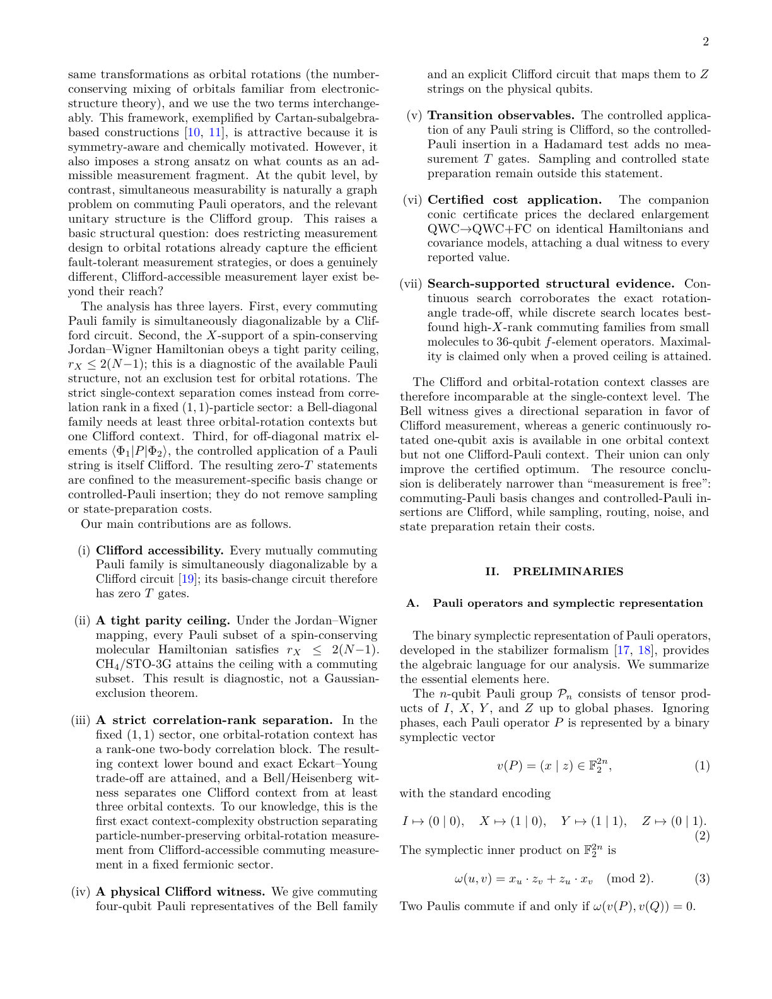
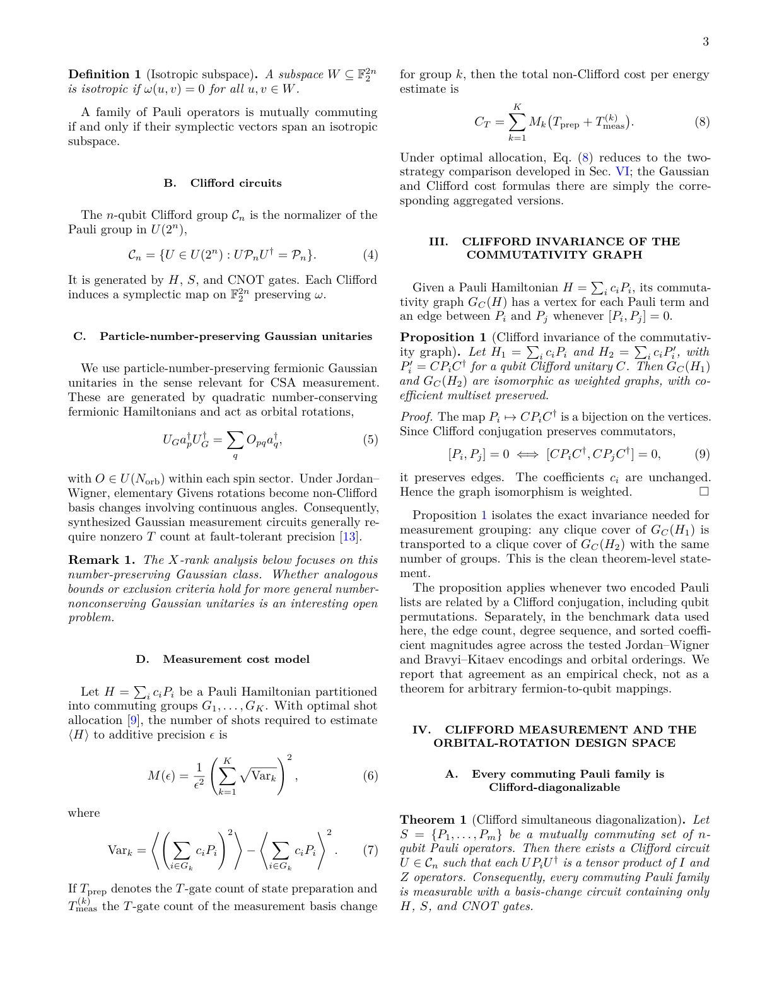
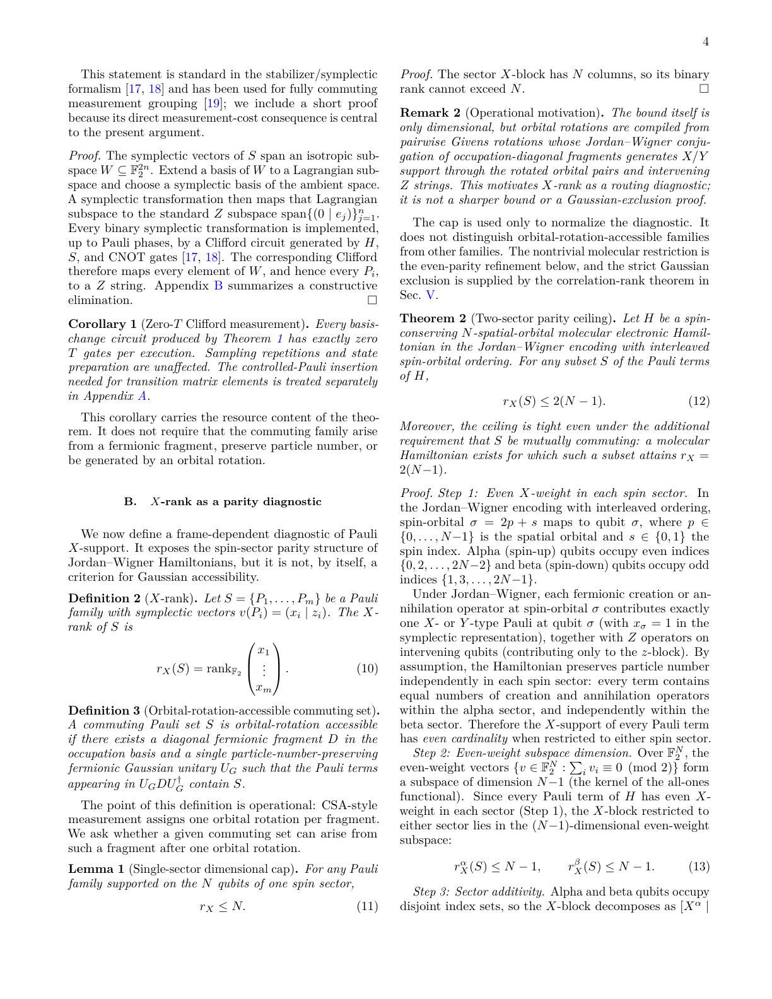
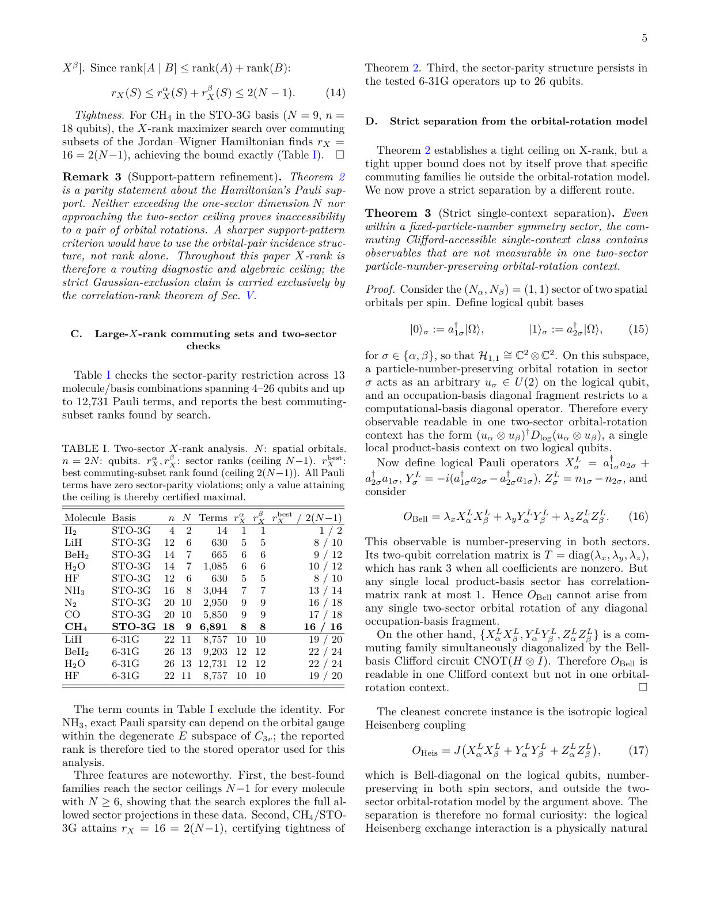
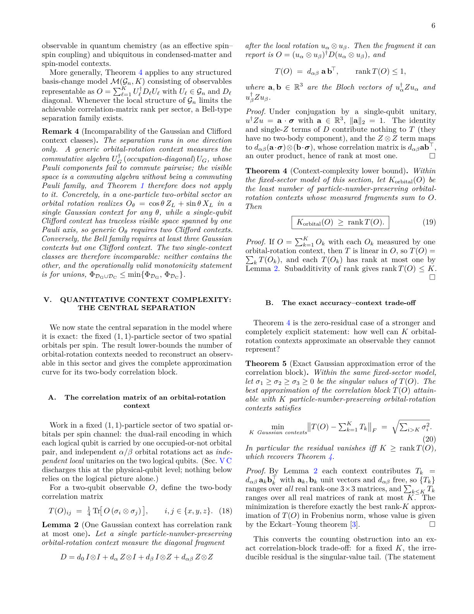
Summary. This work rigorously compares two ways to measure quantum observables: physically motivated 'orbital rotations' versus those achievable with Clifford gates. Using algebraic bounds and optimization techniques on fermionic Hamiltonians, the authors prove that leveraging Clifford-accessible measurement contexts offers substantial resource savings (up to 70%) over purely orbital-rotation methods for large molecular systems.
Why it may be interesting. It provides a rigorous theoretical framework for determining the minimal quantum resources needed to simulate complex electronic structure problems, directly impacting the feasibility assessment of quantum chemistry algorithms.
Main problem. The paper compares the measurement resource requirements for quantum observables, contrasting those achievable via physical 'orbital rotations' against those accessible using purely Clifford-circuit measurements.
Main result. Clifford-accessible measurement contexts provide a significant computational advantage, reducing the certified leading shot cost by 31–70% compared to orbital-rotation contexts when applied to large f-element Hamiltonians.
Method. The authors use algebraic proofs (correlation rank) and global optimization searches (RANGE) to establish rigorous lower bounds on measurement context complexity and compare resource costs.
Model / system. The analysis focuses on fermionic Hamiltonians mapped onto Pauli operators, specifically examining the fixed (1,1)-particle sector with two spatial orbitals per spin, often involving heavy-element systems like NdO or CeO.
Key observables. Correlation Rank, X-rank ($r_X$), and measurement shot cost $M(\epsilon)$ are key diagnostics used to quantify context complexity and resource requirements.
Important parameters / regimes. The parity ceiling $r_X \le 2(N-1)$ is a crucial theoretical bound derived for spin-conserving Hamiltonians; the reduction factor (31–70%) quantifies the practical advantage of Clifford circuits.
Assumptions / limitations. The resource conclusion is limited to basis changes and controlled-Pauli insertions being Clifford; sampling, state preparation, and noise costs are assumed to retain their full cost structure.
Figures summary. Tables summarize empirical results for various molecules (e.g., CH4) showing high X-rank values approaching theoretical ceilings, and another table compares the resource savings on f-element Hamiltonians when using Clifford vs. orbital rotation contexts.
Paper structure. The paper builds from algebraic proofs establishing context obstructions (correlation rank), to continuous optimization corroboration (RANGE), and culminates in applying these findings to estimate practical measurement costs for complex molecular/f-element systems, showing the superiority of Clifford methods.
Algebra and RANGE global optimization play complementary, explicitly separated roles in identifying measurement structure beyond orbital rotations. In the fixed (1,1)-particle sector of two spatial orbitals per spin, algebra proves that one particle-number-preserving orbital-rotation context contributes a rank-one two-body correlation block $T$: an observable needs at least $\mathrm{rank}\,T$ such contexts, and its best $K$-context correlation-block approximation is exactly the Eckart-Young singular-value tail, attained by the truncated SVD. A continuous RANGE search over the physical rotation angles independently corroborates this exact trade-off. A Bell-diagonal, Heisenberg-type witness has correlation rank three: it needs at least three orbital-rotation contexts, while one explicit physical Clifford circuit measures its commuting Pauli representatives. For spin-conserving Jordan-Wigner molecular Hamiltonians we also prove the parity ceiling $r_X \le 2(N-1)$ for any Pauli subset, tight even within commuting subsets; $X$-rank is a routing diagnostic, and the strict separation is carried by the correlation-rank theorem. The discrete mode of RANGE locates high-$X$-rank commuting families across molecular and production f-element Hamiltonians, finding ceiling-saturating witnesses for CH4 and NdO; values are best found unless a proved ceiling is attained. Applying the companion certificate framework, enlarging product settings by fully commuting, Clifford-accessible settings reduces the certified leading shot cost by 31-70% on four 29-35-qubit f-element Hamiltonians, a QWC-versus-QWC+FC result rather than a Gaussian-versus-Clifford pricing. Controlled-Pauli insertions in Hadamard tests are Clifford; these zero-$T$ statements concern measurement circuitry only, while shot counts and state preparation retain their full costs.
Authors: G. N. Koutsokostas, F. Bristy, E. C. Psychogiou, G. A. Bougas, G. C. Katsimiga, S. I. Mistakidis, P. G. Kevrekidis, D. J. Frantzeskakis
Type: theory · Category: quantum gases · PDF: https://arxiv.org/pdf/2607.16820v1
Analysis basis: full PDF text, analyzed in chunks
Topic relevance: 🔥 analog quantum simulation 4/5 · non-equilibrium dynamics 2/5 · Keldysh / 2PI / non-Gaussian methods 1/5 · correlated / nonlocal dissipation 1/5 · driven-dissipative phase transition 1/5 · methods for driven-dissipative 1/5
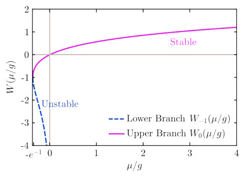
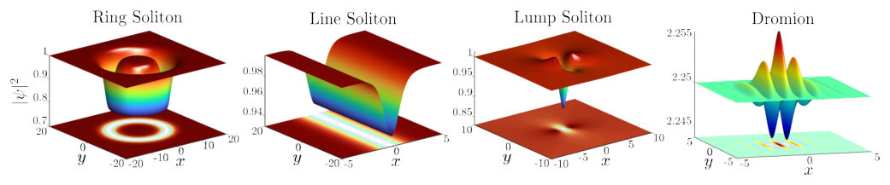
Summary. The paper analyzes 2D solitons in quantum droplets governed by an extended Gross-Pitaevskii equation that includes Lee-Huang-Yang corrections. By using multiscale asymptotic methods, the complex dynamics are reduced to integrable models like KP and DS equations. The results provide approximate analytical solutions for various soliton shapes, confirming their potential observability in current ultracold atom experiments.
Why it may be interesting. This work directly addresses nonlinear wave phenomena in quantum matter systems relevant to ultracold atom experiments, bridging mean-field theory with quantum fluctuation corrections.
Main problem. Investigating the existence and dynamics of two-dimensional solitary waves (solitons) within a quantum droplet environment.
Main result. The study constructs approximate analytical solutions for various soliton types (line, lump, ring, dromion), revealing unprecedented multidimensional solutions in models balancing mean-field and quantum fluctuations.
Method. Multiscale asymptotic methods are employed to reduce the extended Gross-Pitaevskii equation (eGPE) to effective integrable nonlinear models like KP and Davey-Stewartson equations.
Model / system. The system is modeled by a 2D eGPE incorporating logarithmic mean-field and Lee-Huang-Yang interactions, describing quantum droplets in an ultracold atom setting. The analysis focuses on excitations above the modulationally stable background state.
Key observables. Line solitons, algebraically localized lump solitons, ring solitons, and exponentially localized dromions embedded on the droplet background.
Important parameters / regimes. The competition between mean-field interactions and quantum fluctuations; operation in the modulationally stable regime ($\delta a \lesssim 0$).
Assumptions / limitations. The analysis relies on asymptotic expansions (small amplitude excitations $\epsilon \ll 1$) and assumes the background state is modulationally stable.
Figures summary. Figure 2 illustrates density contours for various soliton solutions, including ring, line, lump, and dromion examples.
Paper structure. The paper proceeds by introducing the 2D eGPE (Sec. II), analyzing modulational stability, reducing it to integrable models using multiscale analysis (Sec. III), constructing approximate solutions (Sec. IV), and concluding with a summary (Sec. V).
We investigate the existence and dynamics of two-dimensional solitary waves in a quantum droplet environment described by the extended Gross-Pitaevskii equation featuring logarithmic mean-field and Lee-Huang-Yang interactions. In the modulationally stable regime of the background, we employ suitable multiscale asymptotic methods to derive effective nonlinear integrable models corresponding to the Kadomtsev-Petviashvili and Davey-Stewartson equations. Based on these reduced models, we construct approximate analytical solutions describing line solitons, algebraically localized lump solitons, ring solitons, and exponentially localized dromions embedded on the droplet background. The dynamical robustness of these solutions is monitored through numerical simulations. Line, lump and ring solitons stay closest to the theoretical predictions, although progressively deviate due to the emergence of small-amplitude radiation, while dromions depart from their analytical waveform the most, although they roughly maintain their shape. Our results unveil unprecedented multidimensional soliton solutions in models featuring the competition of mean-field and quantum fluctuations and as such are amenable to current ultracold atom experiments.
Authors: Sandeep Singh, G. K. Samanta
Type: experiment · Category: other · PDF: https://arxiv.org/pdf/2607.16672v1
Analysis basis: full PDF text, analyzed in chunks
Topic relevance: 🔥 quantum optics experiment 4/5 · interference shaping light 3/5 · QC/QI experiment 1/5 · quantum measurements 1/5
Summary. This paper introduces a novel, high-precision technique for mapping polarization fields by utilizing Hong-Ou-Mandel (HOM) interference with entangled photon pairs. By measuring coincidence counts instead of performing multiple intensity projections, the method overcomes systematic errors inherent in traditional polarimetry. This provides a simple and scalable quantum-optical tool for characterizing structured birefringence.
Why it may be interesting. This work is highly relevant to open quantum systems and quantum optics, as it uses fundamental quantum interference phenomena (HOM) to perform complex characterization tasks in a non-destructive, projection-free manner.
Main problem. The primary goal is to develop a projection-free method for accurately mapping two-dimensional polarization distributions within structured materials.
Main result. The authors successfully demonstrated that the coincidence counts from Hong-Ou-Mandel (HOM) interference can directly reconstruct the spatial polarization pattern with high fidelity ($\sim$95%).
Method. They exploit the sensitivity of two-photon bunching to polarization indistinguishability at a balanced beam splitter, bypassing conventional projection measurements.
Model / system. The experiment uses HOM interferometry driven by a spontaneous parametric down-conversion (SPDC) photon-pair source. The system involves analyzing coincidence counts ($P_c$) as a function of the sample's polarization transformation.
Key observables. Coincidence counts ($N_c$), which are mapped to the local polarization orientation ($ heta$) and fast-axis orientation map ($\phi$).
Important parameters / regimes. High coincidence-to-accidental ratio (CAR), angular resolution ($\sim 0.4^\circ$), and interference visibility ($\alpha$).
Assumptions / limitations. The method assumes the use of high-brightness sources for rapid acquisition, and theoretical derivations rely on approximations like narrow-bandpass Gaussian filters.
Figures summary. Figures illustrate how coincidence counts change with polarization angle relative to the signal photon's initial polarization, showing characteristic dips/peaks used for reconstruction.
Paper structure. The paper progresses from identifying the limitations of conventional polarimetry (Stokes) to introducing the quantum-optical HOM technique. It details the theoretical dependence of $P_c$ on polarization indistinguishability and concludes with experimental demonstration of mapping structured fields.
We present a projection-free method for mapping two-dimensional polarization distributions using Hong-Ou -Mandel (HOM) interference. Conventional polarization characterization techniques, such as Stokes polarimetry, rely on sequential intensity measurements under multiple polarization projections, making their accuracy and sensitivity susceptible to the extinction ratio, calibration errors, and stability of the polarization analysis optics. Our approach overcomes these limitations by exploiting the sensitivity of two-photon bunching to polarization indistinguishability at a balanced beam splitter. Using a HOM interferometer driven by a high-brightness spontaneous parametric down-conversion photon-pair source at 810 nm, we introduced a birefringent vortex waveplate with spatially varying polarization rotations in one interferometer arm and measured the resulting coincidence counts with a high signal-to-noise ratio, enabling projection-free characterization of the sample-induced polarization transformations. This configuration maps spatially dependent polarization variations directly onto coincidence counts, providing a projection-free reconstruction of the polarization distribution. We demonstrate high-fidelity ($\sim$95$\%$) reconstruction of the spatial polarization pattern with an angular resolution of approximately $\sim0.4^\circ$. The use an estimator that saturates the Cramer-Rao bound, computed from the Fisher information, can improve resolution further at the cost of longer acquisition. The proposed quantum-optical technique offers a simple, scalable, and high-precision framework for characterizing structured polarization fields in birefringent materials.
Authors: Yingwen Zhang, Kyle Jordan, Duncan England, Vincenzo Tamma, Ebrahim Karimi, Benjamin Sussman
Type: experiment · Category: other · PDF: https://arxiv.org/pdf/2607.16849v1
Analysis basis: full PDF text, analyzed in chunks
Topic relevance: 🔥 quantum optics experiment 4/5 · interference shaping light 3/5 · QC/QI experiment 1/5 · quantum measurements 1/5
Summary. The authors present a method to perform high-precision path-delay measurements using spectrally resolved Hong-Ou-Mandel interferometry. By analyzing the periodicity of spectral interference fringes, they overcome the limitation imposed by photon coherence time, achieving attosecond precision over vastly extended ranges. This technique is robust and demonstrated its utility in real-world nanometer-scale sensing applications.
Why it may be interesting. This work represents a significant advancement in quantum metrology by extending the operational regime of an established quantum optical technique (HOM interferometry) far beyond its fundamental coherence limit using spectral domain analysis.
Main problem. The primary challenge addressed is overcoming the conventional dynamic range limitation of Hong-Ou-Mandel (HOM) interferometry for path-delay sensing, which is traditionally restricted by the coherence time of the interfering photons.
Main result. By analyzing the periodicity of spectral interference fringes rather than just the dip depth, the method achieves near-optimal sensitivity over ranges exceeding the photon coherence time by over two orders of magnitude.
Method. Delay information is extracted from the Fast Fourier Transform (FFT) applied to the spectral interference fringes generated by spectrally entangled photon pairs. This approach is robust because it relies on fringe periodicity rather than absolute coincidence rates.
Model / system. The experiment uses a Hong-Ou-Mandel interferometer setup employing spectrally entangled photon pairs generated via Spontaneous Parametric Down-Conversion (SPDC). The measurement utilizes custom two-photon spectrometers based on time-tagging event cameras to resolve the spectral correlations.
Key observables. Spectral interference fringe periodicity, measured path delay ($\Delta t$ or $\Delta z$), and measurement precision ($ ext{SD}t$ or $ ext{SD}_z$).
Important parameters / regimes. Attosecond time-delay precision (20 as); operational range exceeding coherence time by $>10^2$; spectral resolution ($\xi$) and photon bandwidth ($4\sigma^2$).
Assumptions / limitations. The analysis involves modeling the measurement using approximations for the large-delay regime, where sensitivity is governed by the periodicity of the joint spectral amplitude fringes.
Figures summary. Figures illustrate the conceptual setup (Figure 1), show spectral interference fringes persisting at large delays (Figure 2), plot achieved precision against theoretical limits (CRB) over extended ranges (Figure 3), and demonstrate practical thickness measurements using path delay tracking (Figure 4).
Paper structure. The paper progresses from establishing the limitation of standard HOM sensing to introducing spectral resolution as a solution. It details the theoretical framework based on joint spectral amplitudes, presents experimental results showing enhanced range and precision, and concludes with practical demonstrations like thickness measurement.
Hong-Ou-Mandel (HOM) interferometry enables delay estimation at the quantum precision limit but is traditionally constrained to path differences within the coherence time of the interfering photons. Here, we demonstrate single-measurement path-delay sensing at the measurement Cramer-Rao bound using spectrally resolved HOM interference, thereby removing the conventional dynamic-range limitation imposed by the photon coherence window, with no scanning required for calibration. By extracting delay information from the spectral interference fringes of spectrally entangled photon pairs, we retain near-optimal sensitivity over an operational range exceeding the photon coherence time by over two orders of magnitude. Using one million detected photon pairs, we achieve a time-delay precision of 20 attosecond (6 nm), while real-time operation (at 1 Hz) yields 330 attosecond (100 nm) precision. Because the estimator relies on fringe periodicity rather than absolute coincidence rates, the method is intrinsically robust to photon losses and variations in interference visibility, eliminating the need for recalibration. As a practical demonstration, we measure the thickness of a 300 um transmissive target with nanometer-scale precision. These results mark a significant step towards deploying quantum-limited measurements in real-world sensing applications using HOM interferometry.
Authors: Yanmei Cai, Yicheng Xiong, Ying Liang, Tianxing Ma
Type: theory · Category: strongly correlated electrons · PDF: https://arxiv.org/pdf/2607.16663v1
Analysis basis: full PDF text, analyzed in chunks
Topic relevance: 🔥 analog quantum simulation 4/5 · methods for driven-dissipative 3/5 · Keldysh / 2PI / non-Gaussian methods 1/5 · driven-dissipative phase transition 1/5
Summary. This work investigates how a tunable staggered sublattice potential ($\Delta_0$) controls the superconducting pairing symmetry in the doped honeycomb Hubbard model. Using advanced Quantum Monte Carlo simulations, the authors demonstrate that $\Delta_0$ can drive a transition from $d+id$-wave to $f_n$-wave pairing at low doping. This provides a powerful theoretical blueprint for engineering unconventional superconductors without altering the material's chemical composition.
Why it may be interesting. The ability to tune superconducting pairing symmetries using an artificial potential (band engineering) is highly relevant for designing novel quantum materials and understanding exotic superconductivity mechanisms.
Main problem. The study addresses the challenge of controlling superconducting pairing symmetry in unconventional superconductors using tunable parameters beyond simple chemical doping.
Main result. Applying a staggered sublattice potential ($\Delta_0$) can induce a phase transition, switching the dominant superconducting pairing symmetry from $d+id$-wave to $f_n$-wave at low doping levels. This establishes $\Delta_0$ as a practical band-engineering tool for material design.
Method. The research employs advanced quantum Monte Carlo techniques (DQMC and CPMC) alongside Cluster Mean-Field Theory calculations to probe pairing correlations in the Hubbard model.
Model / system. The system modeled is the doped honeycomb Hubbard model, whose Hamiltonian includes hopping ($t$), on-site interactions ($U$), chemical potential ($\mu$), and a tunable staggered sublattice potential ($\Delta_0$).
Key observables. Pairing correlation functions (for $d+id$-wave and $f_n$-wave), spin susceptibilities ($\chi(q)$), and effective pairing susceptibilities ($ ext{P}_{ ext{eff}}$).
Important parameters / regimes. Staggered potential ($\Delta_0$), doping level ($\langle n angle$), and on-site interaction strength ($U$).
Assumptions / limitations. The calculations rely on sophisticated numerical methods like DQMC/CPMC, and while comparisons with ED benchmarks are made, finite-size effects remain a consideration.
Figures summary. Figures illustrate the phase diagrams showing symmetry transitions (e.g., $d+id$ to $f_n$) as $\Delta_0$ is varied at fixed doping, and show how pairing vertices depend on both $\Delta_0$ and $U$.
Paper structure. The paper systematically analyzes the effect of varying $\Delta_0$ across different doping regimes using multiple QMC methods. It first establishes the role of $\Delta_0$ in suppressing magnetic fluctuations, then details the symmetry transition at low doping, contrasts this with high-doping behavior, and finally confirms the correlation dependence via $U$.
The ability to control superconducting pairing symmetry is crucial for designing unconventional and topological superconductors, yet practical tuning parameters beyond chemical doping remain limited. In this study, we investigate the effect of a tunable sublattice staggered potential on the pairing symmetry in the doped honeycomb Hubbard model. Determinant quantum Monte Carlo at finite temperature and constrained-path quantum Monte Carlo at zero temperature are employed to compute spin susceptibilities and pairing correlations in different channels. We find that increasing the staggered potential suppresses antiferromagnetic fluctuations and, at low doping, induces a transition in the dominant pairing tendency from $d+id$-wave to $f_n$-wave, with consistent results from both quantum Monte Carlo methods. In contrast, at higher doping levels, the system remains dominated by $d+id$-wave pairing even under an enhanced staggered potential. Moreover, strengthening the on-site interaction $U$ enhances the dominant pairing channel, underscoring the essential role of electronic correlations. Our results establish the staggered potential as a practical band-engineering tool for selecting unconventional pairing symmetries without varying the doping concentration, providing inspiration for designing graphene-based artificial superconductors and related doped band insulators such as Li${}_x$MNCl.
Authors: Elna Svegborn, Jef Pauwels, Nicolas Gisin, Alejandro Pozas-Kerstjens
Type: theory · Category: quantum information and computing · PDF: https://arxiv.org/pdf/2607.16396v1
Analysis basis: full PDF text, analyzed in chunks
Topic relevance: 🔥 entanglement & information structure 4/5 · quantum measurements 3/5 · measurement-induced transitions 2/5
Summary. This theoretical work characterizes maximally entangled measurements on two qutrits, demonstrating the existence of an uncountably infinite set of inequivalent bases. The authors use advanced techniques involving SIC sets and polynomial analysis to prove this non-uniqueness, showing that these distinct measurements have measurable operational differences in quantum information tasks.
Why it may be interesting. The findings provide a deep structural understanding of entanglement measurement limitations in higher dimensions, revealing complex non-equivalent structures that have direct implications for quantum communication protocols like quantum repeaters.
Main problem. The paper investigates maximally entangled measurement bases for two qutrits ($d=3$), contrasting them with the unique case of qubits, to determine when these bases are equivalent under local unitary transformations.
Main result. It proves that there exists an uncountably infinite number of inequivalent maximally entangled measurement bases for two qutrits, which is a significant departure from the qubit case. These distinct measurements also exhibit operational differences in quantum information protocols.
Method. Equivalence is tested using an invariant object $I(U)$ derived from the generating unitaries, and complexity is analyzed by mapping the structure onto both the Vaidman and Clifford hierarchies via phase polynomials.
Model / system. The system involves bipartite quantum measurements on two qutrits. The measurement bases are constructed from a continuous family of Symmetric Informationally Complete (SIC) sets of states in dimension three.
Key observables. The parameter $\varphi$ characterizing the basis, the invariant $I(U)$, and the resulting Clifford level ($k$) or Vaidman level ($V_k$).
Important parameters / regimes. The dimension $d=3$, the continuous phase parameter $\varphi$, and integer indices related to unitary transformations.
Assumptions / limitations. The analysis focuses specifically on maximally entangled measurements, requiring separate treatment from non-maximally entangled cases. The Vaidman hierarchy analysis is computationally limited to low levels.
Figures summary. Figure 1 illustrates the relationship between SIC sets, measurement bases, and generating unitaries; Table I lists phases associated with low Clifford levels; Table II summarizes Vaidman levels for various $\varphi$; and Table III summarizes results based on polynomial degree $m$ and level $k$.
Paper structure. The paper systematically establishes the continuous family of inequivalent bases using SIC sets, derives the mathematical condition for equivalence ($\cos(9\varphi_1) = \cos(9\varphi_2)$), and then analyzes the complexity of these measurements by mapping them onto both the Vaidman and Clifford hierarchies using phase polynomials.
Every two-qubit measurement basis composed of maximally entangled eigenstates can be transformed into the Bell basis via local unitary operations. For higher dimensions, in contrast, there exist inequivalent bases composed of maximally entangled eigenstates. Here, we provide a single-parameter family of two-qutrit maximally entangled measurement bases, and demonstrate that none of the bases are equivalent to each other under local unitaries. These bases are constructed from the continuous family of symmetric informationally complete sets of states in dimension three. By studying the local unitary bases that generate the family of two-qutrit maximally entangled measurement bases, we construct the first examples of wild error bases in the smallest dimension where these can exist. Finally, we discuss how distinct measurements in the family lead to differences in performance in several scenarios relevant in quantum information.
Authors: Paul Gattinger, Bettina Heise, Andreas W. Schell, Kristina Duswald, Markus Brandstetter, Ivan Zorin
Type: both · Category: other · PDF: https://arxiv.org/pdf/2607.17964v1
Analysis basis: full PDF text, analyzed in chunks
Topic relevance: 🔥 quantum optics experiment 4/5 · interference shaping light 3/5 · quantum measurements 1/5
Summary. The paper introduces scanless quantum Fourier-transform mid-infrared (sQFTIR) spectroscopy, a technique that overcomes the speed and sensitivity limits of classical FTIR by using entangled photons. By performing measurements in the frequency domain with an interferometric setup, it achieves substantial theoretical signal enhancement and demonstrates rapid hyperspectral mapping capabilities on biological and polymeric samples.
Why it may be interesting. This work represents a significant advancement in quantum optical sensing, directly applying quantum entanglement principles to overcome fundamental measurement limitations in established analytical techniques like FTIR spectroscopy.
Main problem. Classical Fourier-transform infrared (FTIR) spectroscopy is limited by slow, scan-based time-domain measurements, restricting both speed and signal-to-noise ratio.
Main result. The proposed scanless quantum FTIR (sQFTIR) technique achieves a theoretical sensitivity advantage of 26.8 dB over conventional methods and enables rapid hyperspectral mapping with high spatial and spectral resolution.
Method. It utilizes entangled photons from SPDC to perform frequency-domain measurements using a static interferometer, followed by advanced reconstruction algorithms involving multiple Fourier transforms.
Model / system. The system is based on quantum metrology principles applied to mid-IR spectroscopy. It uses spontaneous parametric down-conversion (SPDC) to generate entangled photon pairs ($\omega_s$ and $\omega_i$), where the sample interaction modulates the interference pattern in the frequency domain.
Key observables. Mid-IR spectra ($3000 ext{ cm}^{-1}$ to $2380 ext{ cm}^{-1}$) reconstructed from near-IR measurements ($\approx 780 ext{ nm}$ to $820 ext{ nm}$), and the spectral interferogram recorded in the signal photon domain.
Important parameters / regimes. Sensitivity advantage of 26.8 dB (factor of 21.8); spatial resolution down to $12.3 ext{ µm}$; acquisition times as low as $10 ext{ ms}$.
Assumptions / limitations. The method operates in the low-gain regime of the nonlinear interferometer, and subsequent mathematical derivations neglect high-order dispersion terms.
Figures summary. Figure 1 shows the linear schematic of sQFTIR spectroscopy using interference between signal photons modulated by the sample in the idler path. Figure 2 details the multi-step processing workflow from raw spectral interferogram to final mid-IR spectrum via sequential Fourier transforms.
Paper structure. The paper first establishes the limitations of classical FTIR, then introduces the sQFTIR quantum approach using entangled photons and frequency-domain measurements. It provides theoretical derivations comparing SNR in time vs. frequency domains, details the multi-step reconstruction protocol (involving multiple FTs), and concludes with experimental demonstrations on various materials.
Fourier-transform infrared (FTIR) spectroscopy is a well-established technique for qualitative and quantitative chemical analysis. Classical FTIR systems rely, however, on direct mid-infrared (mid-IR) scan-based time-domain measurements of coherence functions; thus, the signal-to-noise ratio and measurement speed are constrained by design. In this paper, we demonstrate a scanless quantum FTIR (sQFTIR) technique that exploits principles of metrology with entangled photons to circumvent the limitations inherent to classical FTIR systems. The approach exploits the interferometric nature of the sensing paradigm and relies on frequency-domain measurements performed with a static, low-gain nonlinear interferometer. A robust reconstruction algorithm is used to retrieve time-domain signals and reconstruct respective mid-infrared (mid-IR) spectra (3000$~$cm$^{-1}$ to 2380$~$cm$^{-1}$) from near-IR measurements (approx. 780$~$nm to 820$~$nm). The suggested sQFTIR protocol eliminates the need for optical delay scanning and leverages inherent mapping between the related domains. In the theoretical section, we evaluate the intrinsic signal-to-noise advantage of the proposed method over conventional scan-based time-domain measurements; a difference of 26.8 dB (factor of 21.8) is demonstrated. Building on the enhanced sensitivity of the scheme, we demonstrate rapid sQFTIR-based hyperspectral imaging with a spatial resolution of 12.3$~μ$m and a spectral resolution down to 8$~$cm$^{-1}$. Hyperspectral mapping of human colon tissue, microplastics, and multilayer polymer samples composed of polypropylene and ethylene vinyl alcohol yield high-quality single-pixel spectra with acquisition times down to 10$~$ms.
Authors: Valentin Benedetti, Atish Dabholkar, Marcello Dalmonte
Type: theory · Category: other · PDF: https://arxiv.org/pdf/2607.16403v1
Analysis basis: full PDF text, analyzed in chunks
Topic relevance: 🔥 entanglement & information structure 4/5 · analog quantum simulation 1/5 · driven-dissipative phase transition 1/5 · methods for driven-dissipative 1/5 · non-equilibrium dynamics 1/5
Summary. This work demonstrates that the simple structure of stabilizer states is fundamentally incompatible with the entanglement properties required by local Quantum Field Theories. By analyzing the entanglement spectrum and leveraging the type $ ext{III}_1$ nature of QFT algebras, the authors conclude that simulating realistic QFTs necessitates quantum resources beyond those provided by stabilizer codes.
Why it may be interesting. It provides a rigorous theoretical boundary on what quantum computation models (like those based on Clifford gates/stabilizers) can simulate in terms of physical reality, connecting quantum information theory directly to fundamental physics constraints.
Main problem. The paper investigates whether stabilizer states, which are computationally simple, can accurately simulate the complex quantum states found in local Quantum Field Theories (QFTs). It specifically tests if such a state can evolve into or resemble the vacuum of a continuum QFT.
Main result. It proves that no stabilizer state realizing a discrete version of a local QFT can flow to the continuum vacuum because the required entanglement spectrum properties conflict with the inherent flatness of stabilizer states. This implies simulating physical QFTs requires resources beyond Clifford operations.
Method. The analysis compares the entanglement spectra of stabilizer states (which are flat) against those expected for physically relevant QFT states, leveraging the mathematical structure imposed by type III_1 von Neumann algebras.
Model / system. The study focuses on Local Quantum Field Theories (QFTs), using a discrete realization setup initially. The core comparison is between idealized stabilizer states and the vacuum state of a continuum QFT defined over local observables.
Key observables. Entanglement spectrum, 'Magic' (a measure of non-stabilizerness), Rényi entropies ($S_n$), and the structure of von Neumann algebras ($ ext{III}_1$ type).
Important parameters / regimes. The continuum limit, short distances, and the dimensionality/structure of local subregions.
Assumptions / limitations. The primary assumption is that physically relevant QFTs are governed by local observables whose associated algebras are of type $ ext{III}_1$. The authors also note potential exceptions like Rindler or Boulware vacua.
Paper structure. The paper develops the argument by first establishing the properties of entanglement spectra for stabilizer states, then contrasting these with the necessary spectral properties dictated by local QFTs due to their algebraic structure, leading to the conclusion about computational resource requirements.
We show that no stabilizer state in a discrete realization of a local quantum field theory can flow in the continuum to the vacuum or to any state that resembles the vacuum at short distances. The argument rests on the fact that the entanglement spectrum is flat for stabilizer states but non-flat for cyclic and separating states in a local QFT as a consequence of the type III$_1$ nature of the von Neumann algebras associated with arbitrary subregions. Our result implies that simulating physically relevant QFT states necessarily requires quantum resources beyond stabilizer states and Clifford operations. We comment on the implications for holography.
Authors: Eli Zoghlin, Matthew B. Stone, Vasile O. Garlea, Matthias D. Frontzek, Andrew D. Christianson, Andrew F. May
Type: experiment · Category: strongly correlated electrons · PDF: https://arxiv.org/pdf/2607.17995v1
Analysis basis: full PDF text, analyzed in chunks
Topic relevance: 🔥 analog quantum simulation 4/5 · exotic spin models in light-matter 3/5
Summary. This paper experimentally investigates the magnetic ordering in NdCl3, a frustrated quantum magnet. Using neutron scattering and heat capacity measurements, the authors reveal distinct transitions indicating a progression from short-range to long-range magnetic order. They attribute this complex behavior, including the coexistence of different orders, to the frustration inherent in the anisotropic exchange interactions.
Why it may be interesting. The study provides experimental evidence of dimensional crossover and competing orders in a frustrated quantum magnet, which is highly relevant for understanding complex many-body ground states.
Main problem. The study investigates how magnetic frustration influences dimensional reduction and the coexistence of different types of magnetic order in quantum magnets.
Main result. The research observed staged magnetic ordering in NdCl3, characterized by coexisting short-range (quasi-1D) and long-range (3D) magnetic order regimes driven by anisotropic exchange interactions.
Method. A combination of bulk property measurements (heat capacity, magnetization) and single crystal elastic neutron scattering techniques were employed to probe the magnetic transitions and ordering states.
Model / system. The physical system is NdCl3, a rare-earth trichloride known for its frustrated lattice topology. The analysis focuses on the interplay between anisotropic exchange interactions and the resulting magnetic ground state.
Key observables. Magnetic transitions at T_N1 = 270 mK and T_N2 = 180 mK; broad heat capacity peak at T* ≈ 450 mK; highly anisotropic magnetic diffuse scattering and sharp Bragg peaks.
Important parameters / regimes. The key regimes are the temperature ranges defining short-range order (T*), coexisting order (T_N2 < T < T_N1), and full long-range order (below T_N2).
Assumptions / limitations. The authors propose that frustration of anisotropic exchange interactions is the driving mechanism for the observed dimensional reduction and coexistence.
Figures summary. Figure 1 illustrates the crystal structure of NdCl3, detailing nearest-neighbor and next-nearest-neighbor exchange bonds relevant to magnetic interactions.
Paper structure. The paper proceeds by characterizing multiple magnetic transitions using heat capacity and magnetization measurements. Neutron scattering data then maps out the evolution from short-range order (diffuse scattering) through coexisting regimes to full long-range order (Bragg peaks).
The phenomenon of frustration greatly enriches the accessible physics of quantum magnets. With this in mind we study the magnetism of NdCl$_{3}$ using a combination of bulk properties measurements and neutron scattering techniques. The low-temperature heat capacity reveals two magnetic transitions at $T_{N1}$ = 270 mK and $T_{N2}$ = 180 mK. However, much of the magnetic entropy is released above $T_{N1}$, manifesting as a broad peak centered at $T^{*} \approx$ 450 mK. Single crystal elastic neutron scattering reveals highly anisotropic magnetic diffuse scattering above $T_{N2}$, confirming that quasi-one-dimensional, short-range, antiferromagnetic order is the origin of the broad peak in the heat capacity. Magnetic Bragg peaks characterized by a $\vec{k}$ = ($0$ $0$ $\frac{1}{2}$) propagation vector emerge below $T_{N1}$. Interestingly, the magnetic diffuse scattering persists for $T_{N2} < T < T_{N1}$, indicating a regime of coexisting short and long-range order. The magnetic Bragg peaks exhibit an additional increase in intensity below $T_{N2}$ with no change in $\vec{k}$. Concomitantly, the diffuse scattering disappears indicating the attainment of full long-range order. While the precise nature of the ordered magnetic ground state remains unresolved, the observed magnetic scattering indicates predominate $c$-axis moments with a small $ab$-plane component. We propose that the quasi-one-dimensional behavior and the coexistence of short and long-range order are driven by frustration of anisotropic exchange interactions.
Authors: Maria Gragera Garces, Sabina Drăgoi, Lirandë Pira
Type: theory · Category: quantum information and computing · PDF: https://arxiv.org/pdf/2607.17872v1
Analysis basis: full PDF text, analyzed in chunks
Topic relevance: 🔥 entanglement & information structure 4/5 · methods for driven-dissipative 1/5 · non-equilibrium dynamics 1/5
Summary. This work analyzes the fundamental trade-offs required for a quantum circuit to be useful: it must be easy to distribute ('cuttable'), hard to simulate classically, and trainable for machine learning. The authors show that these three goals conflict under standard entanglement assumptions but can be reconciled by using magic states as the primary source of computational hardness.
Why it may be interesting. It provides rigorous theoretical constraints on what is physically achievable in near-term quantum computation, particularly concerning the interplay between resource requirements (cutting vs. simulation) and algorithmic utility (training).
Main problem. The paper investigates whether a quantum circuit family can simultaneously possess cheap circuit cutting, classical hardness (non-simulability), and trainability for variational quantum algorithms.
Main result. Standard entanglement-based circuits face conflicting depth requirements for hardness versus trainability; however, using magic gates as the hardness resource bypasses this conflict.
Method. The analysis uses entanglement geometry to constrain circuit properties, comparing MPS/TTN simulation costs against sampling overheads and analyzing required circuit depths.
Model / system. The study analyzes quantum circuits, specifically focusing on Matrix Product State (MPS) and Tree Tensor Network (TTN) representations applied to structures like the 'two-block wedge' circuit $C(n, d, k)$.
Key observables. Seam bond dimension ($\chi_{seam}$), global MPS bond dimension ($\chi_{global}$), sampling overhead ($\epsilon$ dependence), and loss variance for training.
Important parameters / regimes. System size ($n$), circuit depth ($d$), seam width ($k$), and the number of T-gates ($t$).
Assumptions / limitations. The analysis assumes that cheap cutting requires bounded seam entanglement, and it contrasts standard entanglement resources with magic state resources.
Figures summary. Figure 1 shows the gap between global and seam entropy in MPS verification; Figure 2 verifies that for Clifford+T circuits, the stabiliser overhead grows exponentially while training metrics remain low.
Paper structure. The paper first establishes a negative baseline showing that simple MPS/TTN circuits are easily cuttable but classically simulable. It then constructs a two-block circuit to show how global entanglement can be made hard while keeping seam cutting cheap, ultimately proving the conflict between hardness and trainability for general circuits before resolving it using magic gates.
Circuit cutting promises to scale quantum computations beyond current hardware, but variational quantum advantage also requires low cutting overhead, classical hardness, and trainability. We show that these properties are strongly constrained by entanglement geometry. Matrix product state (MPS) and tree tensor network (TTN) circuits with constant seam bond dimension can be cut with \(O(1/\varepsilon^2)\) sampling overhead, but remain efficiently classically simulable, ruling out asymptotic quantum advantage within these families. By independently controlling seam and intra-block entanglement, we construct a two-block circuit family that remains cheaply cuttable while requiring a super-polynomial global MPS bond dimension, as supported numerically up to \(n=100\). However, MPS hardness and trainability require incompatible depth regimes, \(d=ω(\log n)\) and \(d=O(\log n)\), respectively. Using magic rather than entanglement as the hardness resource avoids this conflict: shallow Clifford+\(T\) circuits remain cuttable and trainable while their stabiliser-simulation cost grows exponentially with the \(T\)-count.
Authors: Manjia Mai, Jifeng Sun, Teng Zhao, Ming Zhang, Liyun Hu
Type: theory · Category: quantum information and computing · PDF: https://arxiv.org/pdf/2607.17629v1
Analysis basis: full PDF text, analyzed in chunks
Topic relevance: 🔥 entanglement & information structure 4/5 · Keldysh / 2PI / non-Gaussian methods 1/5 · correlated / nonlocal dissipation 1/5
Summary. The paper theoretically investigates the fully-connected three-mode squeezed vacuum state to characterize its entanglement and steering properties. It establishes that while the state possesses genuine tripartite entanglement, any two-mode Gaussian steering vanishes due to the complete graph topology. The key finding is that nonclassical resources like Wigner negativity are only generated when considering collective measurements, distinguishing these global correlations from simple pairwise ones.
Why it may be interesting. This work provides a detailed theoretical characterization of quantum correlations in structured multi-mode systems, specifically demonstrating a clean separation between local (pairwise) and global (collective) nonclassical resources, which is crucial for designing quantum communication protocols.
Main problem. The study investigates entanglement, Gaussian steering, and nonclassical resources generated by a fully-connected three-mode squeezed vacuum state (FC-C3MSV). It aims to distinguish between pairwise and collective quantum correlations in this specific topology.
Main result. The FC-C3MSV is genuinely tripartite entangled, but it exhibits zero two-mode Gaussian steering; instead, the resource is purely collective. Furthermore, Wigner negativity can only be generated by subtracting from a collective mode, not from single modes.
Method. The analysis employs techniques including deriving the covariance matrix via Bogoliubov transformations and using specific entanglement witnesses (Armstrong-type) to quantify quantum resources like steering and nonclassicality.
Model / system. The system is modeled as a three-mode vacuum state coupled in a fully-connected (triangle, $K_3$) topology via nonlinear interactions. The analysis compares this to a chain-type coupling structure.
Key observables. Genuine tripartite entanglement, two-mode Gaussian steering ($G_{i o j}$), collective one-mode-versus-two steering ($G_{i o jk}$), and Wigner negativity.
Important parameters / regimes. Squeezing parameter $r$, loss transmittance $\eta$, and coupling strength $\chi$. Critical thresholds for resource survival are calculated (e.g., $\eta \approx 0.58$ for one-to-two steering).
Assumptions / limitations. The analysis assumes symmetric coupling ($\chi_{12} = \chi_{13} = \chi_{23}$) and models vacuum losses using independent amplitude damping channels.
Figures summary. Figure 1 compares the properties of chain vs. fully-connected coupling. Other figures illustrate collective steering measures ($G_{i o jk}$) and mean photon number versus squeezing strength $r$.
Paper structure. The paper first derives the state's properties using IWOP/Bogoliubov transformations, establishes genuine tripartite entanglement via witnesses, then quantifies the vanishing two-mode steering while highlighting the collective resource. Finally, it analyzes how independent vacuum losses and photon subtraction reveal the distinct nature of these pairwise versus collective resources.
We investigate a fully-connected three-mode squeezed vacuum (FC-C3MSV) state, where all three modes are pairwise coupled through nonlinear interactions in a triangle ($K_3$) topology. Using the integration-within-ordered-product technique, we derive the normal product form of the squeezing operator and obtain the covariance matrix directly from the Bogoliubov transformation. Under symmetric coupling, the physical state is genuinely tripartite entangled for any nonzero squeezing, while the three Armstrong-type witnesses provide a finite-window sufficient experimental test; in the chain-type C3MSV only one of these witnesses is violated. We find that, despite two-mode entanglement, the fully-connected topology admits \emph{no} two-mode Gaussian steering ($\mathcal{G}^{i\to j}=0$) between any pair of physical modes; the steering resource is instead collective one-mode-versus-two steering $\mathcal{G}^{i\to jk}$, which is $θ$-independent and grows with $r$. We analyze independent vacuum losses and obtain critical transmittances for steering survival: under full symmetric loss at $r=0.5$, one-to-two collective steering disappears at $η\approx0.58$, whereas reverse two-to-one collective steering survives down to $η\approx0.502$ and the underlying two-mode entanglement persists for all $η>0$. Finally, we revisit photon subtraction using a normalized phase-space derivation. A photon subtraction on a single physical mode does not generate Wigner negativity on another single mode, consistent with the absence of two-mode steering. Wigner negativity can instead be generated when Bob subtracts from the collective mode $(b+c)/\sqrt{2}$, with a loss threshold $η_c\approx0.667$ at $r=0.5$. These results distinguish pairwise and collective nonclassical resources in the FC-C3MSV and clarify the operational role of the complete-graph topology.
← Index · ← Previous · Next →